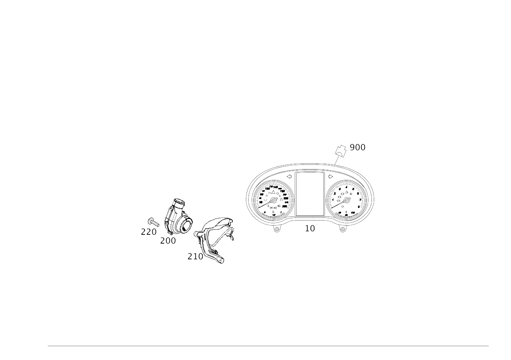

| № | Артикул | Название | Кол. | Примечание | Ограничение |
|---|---|---|---|---|---|
| 10 | A 205 900 74 29 | Блок управления (CONTROL UNIT) | 1 | Комбинация приборов [672] ДЕТАЛЬ ПОСЛЕ УСТАН.ПРОВЕРИТЬ НА АКТУАЛЬНОСТЬ "ПРОШИВНОГО" ПО [697] ДЕТАЛЬ ПОСТАВЛЯЕТСЯ ТОЛЬКО/ИЛИ ТАКЖЕ КАК ЗАП.ЧАСТЬ | (805+055+140/806/807)+461+-(M626/M651/ME04/ME06/U63/P14/P22/P29/233/239/775K/463) |
| 10 | A 205 900 95 44 | Блок управления (CONTROL UNIT) | 1 | Комбинация приборов [672] ДЕТАЛЬ ПОСЛЕ УСТАН.ПРОВЕРИТЬ НА АКТУАЛЬНОСТЬ "ПРОШИВНОГО" ПО [697] ДЕТАЛЬ ПОСТАВЛЯЕТСЯ ТОЛЬКО/ИЛИ ТАКЖЕ КАК ЗАП.ЧАСТЬ | 800+-050+(M274+ME05/B01)+-(463/464/U63/P14/P22/P29/233/239/901/708) |
| 10 | A 205 900 55 48 | Блок управления (CONTROL UNIT) | 1 | Комбинация приборов [672] ДЕТАЛЬ ПОСЛЕ УСТАН.ПРОВЕРИТЬ НА АКТУАЛЬНОСТЬ "ПРОШИВНОГО" ПО [697] ДЕТАЛЬ ПОСТАВЛЯЕТСЯ ТОЛЬКО/ИЛИ ТАКЖЕ КАК ЗАП.ЧАСТЬ | 801+M654+-(U63/P14/P22/P29/233/239/901/708/463/464) |
| 10 | A 205 900 55 48 | Блок управления (CONTROL UNIT) | 1 | Комбинация приборов [672] ДЕТАЛЬ ПОСЛЕ УСТАН.ПРОВЕРИТЬ НА АКТУАЛЬНОСТЬ "ПРОШИВНОГО" ПО [697] ДЕТАЛЬ ПОСТАВЛЯЕТСЯ ТОЛЬКО/ИЛИ ТАКЖЕ КАК ЗАП.ЧАСТЬ | M654+801+-(U63/P14/P22/P29/233/239/901/708/463/464) |
| 10 | A 205 900 56 48 | Блок управления (CONTROL UNIT) | 1 | Комбинация приборов [672] ДЕТАЛЬ ПОСЛЕ УСТАН.ПРОВЕРИТЬ НА АКТУАЛЬНОСТЬ "ПРОШИВНОГО" ПО | 801+(ME05/B01)+-(U63/P14/P22/P29/233/239/901/708/463/464) |
| 10 | A 205 900 56 48 | Блок управления (CONTROL UNIT) | 1 | Комбинация приборов [672] ДЕТАЛЬ ПОСЛЕ УСТАН.ПРОВЕРИТЬ НА АКТУАЛЬНОСТЬ "ПРОШИВНОГО" ПО | (ME05/B01)+(801/802/803/804)+-(U63/P14/P22/P29/233/239/901/708/463/464) |
| 10 | A 205 900 60 48 | Блок управления | 1 | Комбинация приборов [672] ДЕТАЛЬ ПОСЛЕ УСТАН.ПРОВЕРИТЬ НА АКТУАЛЬНОСТЬ "ПРОШИВНОГО" ПО | 801+(ME05/B01)+461+-(U63/P14/P22/P29/233/239/901/708/463/464) |
| 10 | A 205 900 60 48 | Блок управления | 1 | Комбинация приборов [672] ДЕТАЛЬ ПОСЛЕ УСТАН.ПРОВЕРИТЬ НА АКТУАЛЬНОСТЬ "ПРОШИВНОГО" ПО | (ME05/B01)+461+(801/802/803/804)+-(U63/P14/P22/P29/233/239/901/708/463/464) |
| 10 | A 205 900 86 47 | Блок управления | 1 | Комбинация приборов [672] ДЕТАЛЬ ПОСЛЕ УСТАН.ПРОВЕРИТЬ НА АКТУАЛЬНОСТЬ "ПРОШИВНОГО" ПО | 801+M654+ME05+461+-(U63/P14/P22/P29/233/239/901/708/463/464) |
| 10 | A 205 900 61 48 | Блок управления | 1 | Комбинация приборов [672] ДЕТАЛЬ ПОСЛЕ УСТАН.ПРОВЕРИТЬ НА АКТУАЛЬНОСТЬ "ПРОШИВНОГО" ПО | 801+M654+ME05+461+-(U63/P14/P22/P29/233/239/901/708/463/464) |
| 10 | A 205 900 61 48 | Блок управления | 1 | Комбинация приборов [672] ДЕТАЛЬ ПОСЛЕ УСТАН.ПРОВЕРИТЬ НА АКТУАЛЬНОСТЬ "ПРОШИВНОГО" ПО | M654+ME05+461+(801/802/803/804)+-(U63/P14/P22/P29/233/239/901/708/463/464) |
| 10 | A 253 900 98 05 | Блок управления (CONTROL UNIT) | 1 | Комбинация приборов [672] ДЕТАЛЬ ПОСЛЕ УСТАН.ПРОВЕРИТЬ НА АКТУАЛЬНОСТЬ "ПРОШИВНОГО" ПО [697] ДЕТАЛЬ ПОСТАВЛЯЕТСЯ ТОЛЬКО/ИЛИ ТАКЖЕ КАК ЗАП.ЧАСТЬ | 808+(P14/P22/P29+-M016)+-(U63/233/239/463/464/M177/M651/M626) |
| 10 | A 253 900 02 06 | Блок управления (CONTROL UNIT) | 1 | Комбинация приборов [672] ДЕТАЛЬ ПОСЛЕ УСТАН.ПРОВЕРИТЬ НА АКТУАЛЬНОСТЬ "ПРОШИВНОГО" ПО [697] ДЕТАЛЬ ПОСТАВЛЯЕТСЯ ТОЛЬКО/ИЛИ ТАКЖЕ КАК ЗАП.ЧАСТЬ | 808+461+(P14/P22/(P29+-M016))+-(ME04/ME06/U63/233/239/463/464) |
| 10 | A 253 900 06 06 | Блок управления (CONTROL UNIT) | 1 | Комбинация приборов [672] ДЕТАЛЬ ПОСЛЕ УСТАН.ПРОВЕРИТЬ НА АКТУАЛЬНОСТЬ "ПРОШИВНОГО" ПО [697] ДЕТАЛЬ ПОСТАВЛЯЕТСЯ ТОЛЬКО/ИЛИ ТАКЖЕ КАК ЗАП.ЧАСТЬ | 808+494+461+(P14/P22/(P29+-M016))+-(M626/M651/ME04/ME06/U63/233/239/463/464) |
| 10 | A 205 900 68 48 | Блок управления | 1 | Комбинация приборов [672] ДЕТАЛЬ ПОСЛЕ УСТАН.ПРОВЕРИТЬ НА АКТУАЛЬНОСТЬ "ПРОШИВНОГО" ПО | (P14/P22/P29+-M016)+461+(801/802/803/804)+-(U63/233/239/463/464/M177) |
| 10 | A 205 900 90 47 | Блок управления (CONTROL UNIT) | 1 | Комбинация приборов [672] ДЕТАЛЬ ПОСЛЕ УСТАН.ПРОВЕРИТЬ НА АКТУАЛЬНОСТЬ "ПРОШИВНОГО" ПО [697] ДЕТАЛЬ ПОСТАВЛЯЕТСЯ ТОЛЬКО/ИЛИ ТАКЖЕ КАК ЗАП.ЧАСТЬ | 801+M654+(P14/P22/P29+-M016)+-(U63/233/239/463/464/M177) |
| 10 | A 205 900 65 48 | Блок управления (CONTROL UNIT) | 1 | Комбинация приборов [672] ДЕТАЛЬ ПОСЛЕ УСТАН.ПРОВЕРИТЬ НА АКТУАЛЬНОСТЬ "ПРОШИВНОГО" ПО | 801+M654+(P14/P22/P29+-M016)+-(U63/233/239/463/464/M177) |
| 10 | A 205 900 65 48 | Блок управления (CONTROL UNIT) | 1 | Комбинация приборов [672] ДЕТАЛЬ ПОСЛЕ УСТАН.ПРОВЕРИТЬ НА АКТУАЛЬНОСТЬ "ПРОШИВНОГО" ПО | M654+(P14/P22/P29+-M016)+(801/802/803/804)+-(U63/233/239/463/464/M177) |
| 10 | A 205 900 94 47 | Блок управления | 1 | Комбинация приборов [672] ДЕТАЛЬ ПОСЛЕ УСТАН.ПРОВЕРИТЬ НА АКТУАЛЬНОСТЬ "ПРОШИВНОГО" ПО | 801+M654+(P14/P22/P29+-M016)+461+-(U63/233/239/463/464/M177) |
| 10 | A 205 900 69 48 | Блок управления (CONTROL UNIT) | 1 | Комбинация приборов [672] ДЕТАЛЬ ПОСЛЕ УСТАН.ПРОВЕРИТЬ НА АКТУАЛЬНОСТЬ "ПРОШИВНОГО" ПО | 801+M654+(P14/P22/P29+-M016)+461+-(U63/233/239/463/464/M177) |
| 10 | A 205 900 91 47 | Блок управления (CONTROL UNIT) | 1 | Комбинация приборов [672] ДЕТАЛЬ ПОСЛЕ УСТАН.ПРОВЕРИТЬ НА АКТУАЛЬНОСТЬ "ПРОШИВНОГО" ПО | 801+(ME05/B01)+(P14/P22/P29)+-(U63/233/239/463/464) |
| 10 | A 205 900 66 48 | Блок управления (CONTROL UNIT) | 1 | Комбинация приборов [672] ДЕТАЛЬ ПОСЛЕ УСТАН.ПРОВЕРИТЬ НА АКТУАЛЬНОСТЬ "ПРОШИВНОГО" ПО | 801+(ME05/B01)+(P14/P22/P29)+-(U63/233/239/463/464) |
| 10 | A 205 900 66 48 | Блок управления (CONTROL UNIT) | 1 | Комбинация приборов [672] ДЕТАЛЬ ПОСЛЕ УСТАН.ПРОВЕРИТЬ НА АКТУАЛЬНОСТЬ "ПРОШИВНОГО" ПО | (ME05/B01)+(P14/P22/P29)+(801/802/803/804)+-(U63/233/239/463/464) |
| 10 | A 205 900 95 47 | Блок управления | 1 | Комбинация приборов [672] ДЕТАЛЬ ПОСЛЕ УСТАН.ПРОВЕРИТЬ НА АКТУАЛЬНОСТЬ "ПРОШИВНОГО" ПО | 801+(ME05/B01)+(P14/P22/P29)+461+-(U63/233/239/463/464) |
| 10 | A 205 900 70 48 | Блок управления | 1 | Комбинация приборов [672] ДЕТАЛЬ ПОСЛЕ УСТАН.ПРОВЕРИТЬ НА АКТУАЛЬНОСТЬ "ПРОШИВНОГО" ПО | 801+(ME05/B01)+(P14/P22/P29)+461+-(U63/233/239/463/464) |
| 10 | A 205 900 70 48 | Блок управления | 1 | Комбинация приборов [672] ДЕТАЛЬ ПОСЛЕ УСТАН.ПРОВЕРИТЬ НА АКТУАЛЬНОСТЬ "ПРОШИВНОГО" ПО | (ME05/B01)+(P14/P22/P29)+461+(801/802/803/804)+-(U63/233/239/463/464) |
| 10 | A 205 900 92 47 | Блок управления | 1 | Комбинация приборов [672] ДЕТАЛЬ ПОСЛЕ УСТАН.ПРОВЕРИТЬ НА АКТУАЛЬНОСТЬ "ПРОШИВНОГО" ПО | 801+M654+ME05+(P14/P22/P29)+-(U63/233/239/463/464) |
| 10 | A 205 900 67 48 | Блок управления (CONTROL UNIT) | 1 | Комбинация приборов [672] ДЕТАЛЬ ПОСЛЕ УСТАН.ПРОВЕРИТЬ НА АКТУАЛЬНОСТЬ "ПРОШИВНОГО" ПО | 801+M654+ME05+(P14/P22/P29)+-(U63/233/239/463/464) |
| 10 | A 205 900 67 48 | Блок управления (CONTROL UNIT) | 1 | Комбинация приборов [672] ДЕТАЛЬ ПОСЛЕ УСТАН.ПРОВЕРИТЬ НА АКТУАЛЬНОСТЬ "ПРОШИВНОГО" ПО | M654+ME05+(P14/P22/P29)+(801/802/803/804)+-(U63/233/239/463/464) |
| 10 | A 205 900 96 47 | Блок управления | 1 | Комбинация приборов [672] ДЕТАЛЬ ПОСЛЕ УСТАН.ПРОВЕРИТЬ НА АКТУАЛЬНОСТЬ "ПРОШИВНОГО" ПО | 801+M654+ME05+(P14/P22/P29)+461+-(U63/233/239/463/464) |
| 10 | A 205 900 71 48 | Блок управления (CONTROL UNIT) | 1 | Комбинация приборов [672] ДЕТАЛЬ ПОСЛЕ УСТАН.ПРОВЕРИТЬ НА АКТУАЛЬНОСТЬ "ПРОШИВНОГО" ПО | 801+M654+ME05+(P14/P22/P29)+461+-(U63/233/239/463/464) |
| 10 | A 205 900 71 48 | Блок управления (CONTROL UNIT) | 1 | Комбинация приборов [672] ДЕТАЛЬ ПОСЛЕ УСТАН.ПРОВЕРИТЬ НА АКТУАЛЬНОСТЬ "ПРОШИВНОГО" ПО | M654+ME05+(P14/P22/P29)+461+(801/802/803/804)+-(U63/233/239/463/464) |
| 10 | A 205 900 31 48 | Блок управления | 1 | Комбинация приборов [672] ДЕТАЛЬ ПОСЛЕ УСТАН.ПРОВЕРИТЬ НА АКТУАЛЬНОСТЬ "ПРОШИВНОГО" ПО | 801+464+-(M177/M016) |
| 10 | A 205 900 04 49 | Блок управления (CONTROL UNIT) | 1 | Комбинация приборов [672] ДЕТАЛЬ ПОСЛЕ УСТАН.ПРОВЕРИТЬ НА АКТУАЛЬНОСТЬ "ПРОШИВНОГО" ПО [697] ДЕТАЛЬ ПОСТАВЛЯЕТСЯ ТОЛЬКО/ИЛИ ТАКЖЕ КАК ЗАП.ЧАСТЬ | 801+464+-(M177/M016) |
| 10 | A 205 900 04 49 | Блок управления (CONTROL UNIT) | 1 | Комбинация приборов [672] ДЕТАЛЬ ПОСЛЕ УСТАН.ПРОВЕРИТЬ НА АКТУАЛЬНОСТЬ "ПРОШИВНОГО" ПО [697] ДЕТАЛЬ ПОСТАВЛЯЕТСЯ ТОЛЬКО/ИЛИ ТАКЖЕ КАК ЗАП.ЧАСТЬ | 464+(801/802/803/804)+-(M177/M016) |
| 10 | A 205 900 69 49 | Блок управления (CONTROL UNIT) | 1 | Комбинация приборов [672] ДЕТАЛЬ ПОСЛЕ УСТАН.ПРОВЕРИТЬ НА АКТУАЛЬНОСТЬ "ПРОШИВНОГО" ПО [697] ДЕТАЛЬ ПОСТАВЛЯЕТСЯ ТОЛЬКО/ИЛИ ТАКЖЕ КАК ЗАП.ЧАСТЬ | 464+(801/802/803/804)+-(M177/M016) |
| 10 | A 253 900 86 05 | Блок управления (CONTROL UNIT) | 1 | Комбинация приборов [672] ДЕТАЛЬ ПОСЛЕ УСТАН.ПРОВЕРИТЬ НА АКТУАЛЬНОСТЬ "ПРОШИВНОГО" ПО [697] ДЕТАЛЬ ПОСТАВЛЯЕТСЯ ТОЛЬКО/ИЛИ ТАКЖЕ КАК ЗАП.ЧАСТЬ | 808+U63+-(M626/M651/ME04/ME06) |
| 10 | A 205 900 80 47 | Блок управления (CONTROL UNIT) | 1 | Комбинация приборов [672] ДЕТАЛЬ ПОСЛЕ УСТАН.ПРОВЕРИТЬ НА АКТУАЛЬНОСТЬ "ПРОШИВНОГО" ПО [697] ДЕТАЛЬ ПОСТАВЛЯЕТСЯ ТОЛЬКО/ИЛИ ТАКЖЕ КАК ЗАП.ЧАСТЬ | 801+M654+U63+-(464/708) |
| 10 | A 205 900 56 48 | Блок управления (CONTROL UNIT) | 1 | Комбинация приборов [672] ДЕТАЛЬ ПОСЛЕ УСТАН.ПРОВЕРИТЬ НА АКТУАЛЬНОСТЬ "ПРОШИВНОГО" ПО | 801+(ME05/B01)+U63+-(464/708) |
| 10 | A 205 900 57 48 | Блок управления (CONTROL UNIT) | 1 | Комбинация приборов [672] ДЕТАЛЬ ПОСЛЕ УСТАН.ПРОВЕРИТЬ НА АКТУАЛЬНОСТЬ "ПРОШИВНОГО" ПО | 801+M654+ME05+U63+-(464/708) |
| 10 | A 205 900 57 48 | Блок управления (CONTROL UNIT) | 1 | Комбинация приборов [672] ДЕТАЛЬ ПОСЛЕ УСТАН.ПРОВЕРИТЬ НА АКТУАЛЬНОСТЬ "ПРОШИВНОГО" ПО | M654+ME05+U63+(801/802/803/804)+-(464/708) |
| 10 | A 253 900 10 06 | Блок управления (CONTROL UNIT) | 1 | Комбинация приборов [672] ДЕТАЛЬ ПОСЛЕ УСТАН.ПРОВЕРИТЬ НА АКТУАЛЬНОСТЬ "ПРОШИВНОГО" ПО [697] ДЕТАЛЬ ПОСТАВЛЯЕТСЯ ТОЛЬКО/ИЛИ ТАКЖЕ КАК ЗАП.ЧАСТЬ | 808+(233/239)+-(M626/M651/ME06/M016/U63/463/464) |
| 10 | A 253 900 14 06 | Блок управления (CONTROL UNIT) | 1 | Комбинация приборов [672] ДЕТАЛЬ ПОСЛЕ УСТАН.ПРОВЕРИТЬ НА АКТУАЛЬНОСТЬ "ПРОШИВНОГО" ПО [697] ДЕТАЛЬ ПОСТАВЛЯЕТСЯ ТОЛЬКО/ИЛИ ТАКЖЕ КАК ЗАП.ЧАСТЬ | 808+(233/239)+461+-(M626/M651/ME06/M016/U63/463/464) |
| 10 | A 253 900 18 06 | Блок управления (CONTROL UNIT) | 1 | Комбинация приборов [672] ДЕТАЛЬ ПОСЛЕ УСТАН.ПРОВЕРИТЬ НА АКТУАЛЬНОСТЬ "ПРОШИВНОГО" ПО [697] ДЕТАЛЬ ПОСТАВЛЯЕТСЯ ТОЛЬКО/ИЛИ ТАКЖЕ КАК ЗАП.ЧАСТЬ | 808+(233/239)+494+461+-(M626/M651/ME04/ME06/M016/U63/463/464) |
| 10 | A 205 900 01 48 | Блок управления | 1 | Комбинация приборов [672] ДЕТАЛЬ ПОСЛЕ УСТАН.ПРОВЕРИТЬ НА АКТУАЛЬНОСТЬ "ПРОШИВНОГО" ПО [697] ДЕТАЛЬ ПОСТАВЛЯЕТСЯ ТОЛЬКО/ИЛИ ТАКЖЕ КАК ЗАП.ЧАСТЬ | 801+(ME05/B01)+(233/239)+-(U63/463/464) |
| 10 | A 205 900 76 48 | Блок управления (CONTROL UNIT) | 1 | Комбинация приборов [672] ДЕТАЛЬ ПОСЛЕ УСТАН.ПРОВЕРИТЬ НА АКТУАЛЬНОСТЬ "ПРОШИВНОГО" ПО [697] ДЕТАЛЬ ПОСТАВЛЯЕТСЯ ТОЛЬКО/ИЛИ ТАКЖЕ КАК ЗАП.ЧАСТЬ | 801+(ME05/B01)+(233/239)+-(U63/463/464) |
| 10 | A 205 900 76 48 | Блок управления (CONTROL UNIT) | 1 | Комбинация приборов [672] ДЕТАЛЬ ПОСЛЕ УСТАН.ПРОВЕРИТЬ НА АКТУАЛЬНОСТЬ "ПРОШИВНОГО" ПО [697] ДЕТАЛЬ ПОСТАВЛЯЕТСЯ ТОЛЬКО/ИЛИ ТАКЖЕ КАК ЗАП.ЧАСТЬ | (ME05/B01)+(233/239)+(801/802/803/804)+-(U63/463/464) |
| 10 | A 205 900 05 48 | Блок управления | 1 | Комбинация приборов [672] ДЕТАЛЬ ПОСЛЕ УСТАН.ПРОВЕРИТЬ НА АКТУАЛЬНОСТЬ "ПРОШИВНОГО" ПО | 801+(ME05/B01)+(233/239)+461+-(U63/463/464) |
| 10 | A 205 900 80 48 | Блок управления | 1 | Комбинация приборов [672] ДЕТАЛЬ ПОСЛЕ УСТАН.ПРОВЕРИТЬ НА АКТУАЛЬНОСТЬ "ПРОШИВНОГО" ПО | 801+(ME05/B01)+(233/239)+461+-(U63/463/464) |
| 10 | A 205 900 80 48 | Блок управления | 1 | Комбинация приборов [672] ДЕТАЛЬ ПОСЛЕ УСТАН.ПРОВЕРИТЬ НА АКТУАЛЬНОСТЬ "ПРОШИВНОГО" ПО | (ME05/B01)+(233/239)+461+(801/802/803/804)+-(U63/463/464) |
| 10 | A 205 900 02 48 | Блок управления (CONTROL UNIT) | 1 | Комбинация приборов [672] ДЕТАЛЬ ПОСЛЕ УСТАН.ПРОВЕРИТЬ НА АКТУАЛЬНОСТЬ "ПРОШИВНОГО" ПО | 801+M654+ME05+(233/239)+-(U63/463/464) |
| 10 | A 205 900 77 48 | Блок управления (CONTROL UNIT) | 1 | Комбинация приборов [672] ДЕТАЛЬ ПОСЛЕ УСТАН.ПРОВЕРИТЬ НА АКТУАЛЬНОСТЬ "ПРОШИВНОГО" ПО | 801+M654+ME05+(233/239)+-(U63/463/464) |
| 10 | A 205 900 77 48 | Блок управления (CONTROL UNIT) | 1 | Комбинация приборов [672] ДЕТАЛЬ ПОСЛЕ УСТАН.ПРОВЕРИТЬ НА АКТУАЛЬНОСТЬ "ПРОШИВНОГО" ПО | M654+ME05+(233/239)+(801/802/803/804)+-(U63/463/464) |
| 10 | A 205 900 06 48 | Блок управления | 1 | Комбинация приборов [672] ДЕТАЛЬ ПОСЛЕ УСТАН.ПРОВЕРИТЬ НА АКТУАЛЬНОСТЬ "ПРОШИВНОГО" ПО | 801+M654+ME05+(233/239)+461+-(U63/463/464) |
| 10 | A 205 900 81 48 | Блок управления | 1 | Комбинация приборов [672] ДЕТАЛЬ ПОСЛЕ УСТАН.ПРОВЕРИТЬ НА АКТУАЛЬНОСТЬ "ПРОШИВНОГО" ПО | 801+M654+ME05+(233/239)+461+-(U63/463/464) |
| 10 | A 205 900 81 48 | Блок управления | 1 | Комбинация приборов [672] ДЕТАЛЬ ПОСЛЕ УСТАН.ПРОВЕРИТЬ НА АКТУАЛЬНОСТЬ "ПРОШИВНОГО" ПО | M654+ME05+(233/239)+461+(801/802/803/804)+-(U63/463/464) |
| 10 | A 253 900 22 06 | Блок управления (CONTROL UNIT) | 1 | Комбинация приборов [672] ДЕТАЛЬ ПОСЛЕ УСТАН.ПРОВЕРИТЬ НА АКТУАЛЬНОСТЬ "ПРОШИВНОГО" ПО [697] ДЕТАЛЬ ПОСТАВЛЯЕТСЯ ТОЛЬКО/ИЛИ ТАКЖЕ КАК ЗАП.ЧАСТЬ | 808+463+-(M626/M651/M177/M016/ME04/ME06/U63)/(FC/FA)+808+463+M276+M016+-P29 |
| 10 | A 253 900 26 06 | Блок управления (CONTROL UNIT) | 1 | Комбинация приборов [672] ДЕТАЛЬ ПОСЛЕ УСТАН.ПРОВЕРИТЬ НА АКТУАЛЬНОСТЬ "ПРОШИВНОГО" ПО [697] ДЕТАЛЬ ПОСТАВЛЯЕТСЯ ТОЛЬКО/ИЛИ ТАКЖЕ КАК ЗАП.ЧАСТЬ | 808+461+463+-(M626/M651/M177/ME04/ME06/U63/M016) |
| 10 | A 253 900 34 06 | Блок управления (CONTROL UNIT) | 1 | Комбинация приборов [672] ДЕТАЛЬ ПОСЛЕ УСТАН.ПРОВЕРИТЬ НА АКТУАЛЬНОСТЬ "ПРОШИВНОГО" ПО [697] ДЕТАЛЬ ПОСТАВЛЯЕТСЯ ТОЛЬКО/ИЛИ ТАКЖЕ КАК ЗАП.ЧАСТЬ | 808+(233/239)+463+-(M626/M651/M177/M016/ME04/ME06/U63)/(FC/FA)+808+(233/239)+463+M276+M016+-P29 |
| 10 | A 253 900 38 06 | Блок управления (CONTROL UNIT) | 1 | Комбинация приборов [672] ДЕТАЛЬ ПОСЛЕ УСТАН.ПРОВЕРИТЬ НА АКТУАЛЬНОСТЬ "ПРОШИВНОГО" ПО [697] ДЕТАЛЬ ПОСТАВЛЯЕТСЯ ТОЛЬКО/ИЛИ ТАКЖЕ КАК ЗАП.ЧАСТЬ | 808+(233/239)+461+463+-(M626/M651/M177/M016/ME04/ME06/U63)/(FC/FA)+808+(233/239)+461+463+M276+M016+-P29 |
| 10 | A 253 900 42 06 | Блок управления (CONTROL UNIT) | 1 | Комбинация приборов [672] ДЕТАЛЬ ПОСЛЕ УСТАН.ПРОВЕРИТЬ НА АКТУАЛЬНОСТЬ "ПРОШИВНОГО" ПО [697] ДЕТАЛЬ ПОСТАВЛЯЕТСЯ ТОЛЬКО/ИЛИ ТАКЖЕ КАК ЗАП.ЧАСТЬ | 808+(233/239)+494+461+463+-(M626/M651/M177/M016/ME04/ME06/U63) |
| 10 | A 205 900 25 45 | Блок управления (CONTROL UNIT) | 1 | Комбинация приборов [672] ДЕТАЛЬ ПОСЛЕ УСТАН.ПРОВЕРИТЬ НА АКТУАЛЬНОСТЬ "ПРОШИВНОГО" ПО [697] ДЕТАЛЬ ПОСТАВЛЯЕТСЯ ТОЛЬКО/ИЛИ ТАКЖЕ КАК ЗАП.ЧАСТЬ | 800+(ME05+-M654/B01)+463+-(050/U63/464) |
| 10 | A 205 900 35 45 | Блок управления (CONTROL UNIT) | 1 | Комбинация приборов [672] ДЕТАЛЬ ПОСЛЕ УСТАН.ПРОВЕРИТЬ НА АКТУАЛЬНОСТЬ "ПРОШИВНОГО" ПО [697] ДЕТАЛЬ ПОСТАВЛЯЕТСЯ ТОЛЬКО/ИЛИ ТАКЖЕ КАК ЗАП.ЧАСТЬ | 800+(ME05+-M654/B01)+(233/239)+463+-(050/U63/464) |
| 10 | A 205 900 39 45 | Блок управления (CONTROL UNIT) | 1 | Комбинация приборов [672] ДЕТАЛЬ ПОСЛЕ УСТАН.ПРОВЕРИТЬ НА АКТУАЛЬНОСТЬ "ПРОШИВНОГО" ПО | 800+(ME05+-M654/B01)+(233/239)+463+461+-(050/U63/464) |
| 10 | A 205 900 09 48 | Блок управления | 1 | Комбинация приборов [672] ДЕТАЛЬ ПОСЛЕ УСТАН.ПРОВЕРИТЬ НА АКТУАЛЬНОСТЬ "ПРОШИВНОГО" ПО | 801+463+-(M016/U63/464/M177) |
| 10 | A 205 900 84 48 | Блок управления | 1 | Комбинация приборов [672] ДЕТАЛЬ ПОСЛЕ УСТАН.ПРОВЕРИТЬ НА АКТУАЛЬНОСТЬ "ПРОШИВНОГО" ПО | 801+463+-(M016/U63/464/M177) |
| 10 | A 205 900 84 48 | Блок управления | 1 | Комбинация приборов [672] ДЕТАЛЬ ПОСЛЕ УСТАН.ПРОВЕРИТЬ НА АКТУАЛЬНОСТЬ "ПРОШИВНОГО" ПО | 463+(801/802/803/804)+-(M016/U63/464/M177) |
| 10 | A 205 900 13 48 | Блок управления | 1 | Комбинация приборов [672] ДЕТАЛЬ ПОСЛЕ УСТАН.ПРОВЕРИТЬ НА АКТУАЛЬНОСТЬ "ПРОШИВНОГО" ПО | 801+463+461+-(M016/U63/464/M177) |
| 10 | A 205 900 88 48 | Блок управления | 1 | Комбинация приборов [672] ДЕТАЛЬ ПОСЛЕ УСТАН.ПРОВЕРИТЬ НА АКТУАЛЬНОСТЬ "ПРОШИВНОГО" ПО | 801+463+461+-(M016/U63/464/M177) |
| 10 | A 205 900 88 48 | Блок управления | 1 | Комбинация приборов [672] ДЕТАЛЬ ПОСЛЕ УСТАН.ПРОВЕРИТЬ НА АКТУАЛЬНОСТЬ "ПРОШИВНОГО" ПО | 463+461+(801/802/803/804)+-(M016/U63/464/M177) |
| 10 | A 205 900 19 48 | Блок управления | 1 | Комбинация приборов [672] ДЕТАЛЬ ПОСЛЕ УСТАН.ПРОВЕРИТЬ НА АКТУАЛЬНОСТЬ "ПРОШИВНОГО" ПО | 801+(233/239)+463+-(M016/U63/464/M177) |
| 10 | A 205 900 94 48 | Блок управления | 1 | Комбинация приборов [672] ДЕТАЛЬ ПОСЛЕ УСТАН.ПРОВЕРИТЬ НА АКТУАЛЬНОСТЬ "ПРОШИВНОГО" ПО | 801+(233/239)+463+-(M016/U63/464/M177) |
| 10 | A 205 900 94 48 | Блок управления | 1 | Комбинация приборов [672] ДЕТАЛЬ ПОСЛЕ УСТАН.ПРОВЕРИТЬ НА АКТУАЛЬНОСТЬ "ПРОШИВНОГО" ПО | (233/239)+463+(801/802/803/804)+-(M016/U63/464/M177) |
| 10 | A 205 900 23 48 | Блок управления | 1 | Комбинация приборов [672] ДЕТАЛЬ ПОСЛЕ УСТАН.ПРОВЕРИТЬ НА АКТУАЛЬНОСТЬ "ПРОШИВНОГО" ПО | 801+(233/239)+463+461+-(M016/U63/464/M177) |
| 10 | A 205 900 98 48 | Блок управления | 1 | Комбинация приборов [672] ДЕТАЛЬ ПОСЛЕ УСТАН.ПРОВЕРИТЬ НА АКТУАЛЬНОСТЬ "ПРОШИВНОГО" ПО | 801+(233/239)+463+461+-(M016/U63/464/M177) |
| 10 | A 205 900 98 48 | Блок управления | 1 | Комбинация приборов [672] ДЕТАЛЬ ПОСЛЕ УСТАН.ПРОВЕРИТЬ НА АКТУАЛЬНОСТЬ "ПРОШИВНОГО" ПО | (233/239)+463+461+(801/802/803/804)+-(M016/U63/464/M177) |
| 10 | A 205 900 11 48 | Блок управления | 1 | Комбинация приборов [672] ДЕТАЛЬ ПОСЛЕ УСТАН.ПРОВЕРИТЬ НА АКТУАЛЬНОСТЬ "ПРОШИВНОГО" ПО | 801+(ME05/B01)+463+-(U63/464) |
| 10 | A 205 900 86 48 | Блок управления (CONTROL UNIT) | 1 | Комбинация приборов [672] ДЕТАЛЬ ПОСЛЕ УСТАН.ПРОВЕРИТЬ НА АКТУАЛЬНОСТЬ "ПРОШИВНОГО" ПО | 801+(ME05/B01)+463+-(U63/464) |
| 10 | A 205 900 86 48 | Блок управления (CONTROL UNIT) | 1 | Комбинация приборов [672] ДЕТАЛЬ ПОСЛЕ УСТАН.ПРОВЕРИТЬ НА АКТУАЛЬНОСТЬ "ПРОШИВНОГО" ПО | (ME05/B01)+463+(801/802/803/804)+-(U63/464) |
| 10 | A 205 900 15 48 | Блок управления | 1 | Комбинация приборов [672] ДЕТАЛЬ ПОСЛЕ УСТАН.ПРОВЕРИТЬ НА АКТУАЛЬНОСТЬ "ПРОШИВНОГО" ПО | 801+(ME05/B01)+463+461+-(U63/464) |
| 10 | A 205 900 90 48 | Блок управления | 1 | Комбинация приборов [672] ДЕТАЛЬ ПОСЛЕ УСТАН.ПРОВЕРИТЬ НА АКТУАЛЬНОСТЬ "ПРОШИВНОГО" ПО | 801+(ME05/B01)+463+461+-(U63/464) |
| 10 | A 205 900 90 48 | Блок управления | 1 | Комбинация приборов [672] ДЕТАЛЬ ПОСЛЕ УСТАН.ПРОВЕРИТЬ НА АКТУАЛЬНОСТЬ "ПРОШИВНОГО" ПО | (ME05/B01)+463+461+(801/802/803/804)+-(U63/464) |
| 10 | A 205 900 21 48 | Блок управления | 1 | Комбинация приборов [672] ДЕТАЛЬ ПОСЛЕ УСТАН.ПРОВЕРИТЬ НА АКТУАЛЬНОСТЬ "ПРОШИВНОГО" ПО | 801+(ME05/B01)+(233/239)+463+-(U63/464) |
| 10 | A 205 900 96 48 | Блок управления (CONTROL UNIT) | 1 | Комбинация приборов [672] ДЕТАЛЬ ПОСЛЕ УСТАН.ПРОВЕРИТЬ НА АКТУАЛЬНОСТЬ "ПРОШИВНОГО" ПО | 801+(ME05/B01)+(233/239)+463+-(U63/464) |
| 10 | A 205 900 96 48 | Блок управления (CONTROL UNIT) | 1 | Комбинация приборов [672] ДЕТАЛЬ ПОСЛЕ УСТАН.ПРОВЕРИТЬ НА АКТУАЛЬНОСТЬ "ПРОШИВНОГО" ПО | (ME05/B01)+(233/239)+463+(801/802/803/804)+-(U63/464) |
| 10 | A 205 900 25 48 | Блок управления | 1 | Комбинация приборов [672] ДЕТАЛЬ ПОСЛЕ УСТАН.ПРОВЕРИТЬ НА АКТУАЛЬНОСТЬ "ПРОШИВНОГО" ПО | 801+(ME05/B01)+(233/239)+463+461+-(U63/464) |
| 10 | A 205 900 00 49 | Блок управления | 1 | Комбинация приборов [672] ДЕТАЛЬ ПОСЛЕ УСТАН.ПРОВЕРИТЬ НА АКТУАЛЬНОСТЬ "ПРОШИВНОГО" ПО | 801+(ME05/B01)+(233/239)+463+461+-(U63/464) |
| 10 | A 205 900 00 49 | Блок управления | 1 | Комбинация приборов [672] ДЕТАЛЬ ПОСЛЕ УСТАН.ПРОВЕРИТЬ НА АКТУАЛЬНОСТЬ "ПРОШИВНОГО" ПО | (ME05/B01)+(233/239)+463+461+(801/802/803/804)+-(U63/464) |
| 10 | A 205 900 12 48 | Блок управления | 1 | Комбинация приборов [672] ДЕТАЛЬ ПОСЛЕ УСТАН.ПРОВЕРИТЬ НА АКТУАЛЬНОСТЬ "ПРОШИВНОГО" ПО | 801+M654+ME05+463+-(U63/464) |
| 10 | A 205 900 87 48 | Блок управления | 1 | Комбинация приборов [672] ДЕТАЛЬ ПОСЛЕ УСТАН.ПРОВЕРИТЬ НА АКТУАЛЬНОСТЬ "ПРОШИВНОГО" ПО | 801+M654+ME05+463+-(U63/464) |
| 10 | A 205 900 87 48 | Блок управления | 1 | Комбинация приборов [672] ДЕТАЛЬ ПОСЛЕ УСТАН.ПРОВЕРИТЬ НА АКТУАЛЬНОСТЬ "ПРОШИВНОГО" ПО | M654+ME05+463+(801/802/803/804)+-(U63/464) |
| 10 | A 205 900 16 48 | Блок управления | 1 | Комбинация приборов [672] ДЕТАЛЬ ПОСЛЕ УСТАН.ПРОВЕРИТЬ НА АКТУАЛЬНОСТЬ "ПРОШИВНОГО" ПО | 801+M654+ME05+463+461+-(U63/464) |
| 10 | A 205 900 91 48 | Блок управления | 1 | Комбинация приборов [672] ДЕТАЛЬ ПОСЛЕ УСТАН.ПРОВЕРИТЬ НА АКТУАЛЬНОСТЬ "ПРОШИВНОГО" ПО | 801+M654+ME05+463+461+-(U63/464) |
| 10 | A 205 900 91 48 | Блок управления | 1 | Комбинация приборов [672] ДЕТАЛЬ ПОСЛЕ УСТАН.ПРОВЕРИТЬ НА АКТУАЛЬНОСТЬ "ПРОШИВНОГО" ПО | M654+ME05+463+461+(801/802/803/804)+-(U63/464) |
| 10 | A 205 900 22 48 | Блок управления (CONTROL UNIT) | 1 | Комбинация приборов [672] ДЕТАЛЬ ПОСЛЕ УСТАН.ПРОВЕРИТЬ НА АКТУАЛЬНОСТЬ "ПРОШИВНОГО" ПО | 801+M654+ME05+(233/239)+463+-(U63/464) |
| 10 | A 205 900 97 48 | Блок управления (CONTROL UNIT) | 1 | Комбинация приборов [672] ДЕТАЛЬ ПОСЛЕ УСТАН.ПРОВЕРИТЬ НА АКТУАЛЬНОСТЬ "ПРОШИВНОГО" ПО | 801+M654+ME05+(233/239)+463+-(U63/464) |
| 10 | A 205 900 97 48 | Блок управления (CONTROL UNIT) | 1 | Комбинация приборов [672] ДЕТАЛЬ ПОСЛЕ УСТАН.ПРОВЕРИТЬ НА АКТУАЛЬНОСТЬ "ПРОШИВНОГО" ПО | M654+ME05+(233/239)+463+(801/802/803/804)+-(U63/464) |
| 10 | A 205 900 26 48 | Блок управления | 1 | Комбинация приборов [672] ДЕТАЛЬ ПОСЛЕ УСТАН.ПРОВЕРИТЬ НА АКТУАЛЬНОСТЬ "ПРОШИВНОГО" ПО | 801+M654+ME05+(233/239)+463+461+-(U63/464) |
| 10 | A 205 900 01 49 | Блок управления | 1 | Комбинация приборов [672] ДЕТАЛЬ ПОСЛЕ УСТАН.ПРОВЕРИТЬ НА АКТУАЛЬНОСТЬ "ПРОШИВНОГО" ПО | 801+M654+ME05+(233/239)+463+461+-(U63/464) |
| 10 | A 205 900 01 49 | Блок управления | 1 | Комбинация приборов [672] ДЕТАЛЬ ПОСЛЕ УСТАН.ПРОВЕРИТЬ НА АКТУАЛЬНОСТЬ "ПРОШИВНОГО" ПО | M654+ME05+(233/239)+463+461+(801/802/803/804)+-(U63/464) |
| 10 | A 205 900 82 29 | Блок управления (CONTROL UNIT) | 1 | Комбинация приборов [672] ДЕТАЛЬ ПОСЛЕ УСТАН.ПРОВЕРИТЬ НА АКТУАЛЬНОСТЬ "ПРОШИВНОГО" ПО [697] ДЕТАЛЬ ПОСТАВЛЯЕТСЯ ТОЛЬКО/ИЛИ ТАКЖЕ КАК ЗАП.ЧАСТЬ | (805+055+140/806/807)+(P14/P22/(P29+-M016))+-(M626/M651/ME04/ME06/U63/233/239/463/775K) |
| 10 | A 205 900 90 29 | Блок управления (CONTROL UNIT) | 1 | Комбинация приборов [672] ДЕТАЛЬ ПОСЛЕ УСТАН.ПРОВЕРИТЬ НА АКТУАЛЬНОСТЬ "ПРОШИВНОГО" ПО [697] ДЕТАЛЬ ПОСТАВЛЯЕТСЯ ТОЛЬКО/ИЛИ ТАКЖЕ КАК ЗАП.ЧАСТЬ | (806/807)+494+461+(P14/P22/(P29+-M016))+-(M626/M651/ME04/ME06/U63/233/239/463/775K) |
| 10 | A 205 900 66 33 | Блок управления (CONTROL UNIT) | 1 | Комбинация приборов [672] ДЕТАЛЬ ПОСЛЕ УСТАН.ПРОВЕРИТЬ НА АКТУАЛЬНОСТЬ "ПРОШИВНОГО" ПО [697] ДЕТАЛЬ ПОСТАВЛЯЕТСЯ ТОЛЬКО/ИЛИ ТАКЖЕ КАК ЗАП.ЧАСТЬ | 808+(P14/P22/P29+-M016)+-(U63/233/239/463/464/M177/M651/M626) |
| 10 | A 253 900 51 04 | Блок управления (CONTROL UNIT) | 1 | Комбинация приборов [672] ДЕТАЛЬ ПОСЛЕ УСТАН.ПРОВЕРИТЬ НА АКТУАЛЬНОСТЬ "ПРОШИВНОГО" ПО [697] ДЕТАЛЬ ПОСТАВЛЯЕТСЯ ТОЛЬКО/ИЛИ ТАКЖЕ КАК ЗАП.ЧАСТЬ | 808+(P14/P22/P29+-M016)+-(U63/233/239/463/464/M177/M651/M626) |
| 10 | A 205 900 70 33 | Блок управления (CONTROL UNIT) | 1 | Комбинация приборов [672] ДЕТАЛЬ ПОСЛЕ УСТАН.ПРОВЕРИТЬ НА АКТУАЛЬНОСТЬ "ПРОШИВНОГО" ПО [697] ДЕТАЛЬ ПОСТАВЛЯЕТСЯ ТОЛЬКО/ИЛИ ТАКЖЕ КАК ЗАП.ЧАСТЬ | 808+461+(P14/P22/(P29+-M016))+-(ME04/ME06/U63/233/239/463/464) |
| 10 | A 253 900 55 04 | Блок управления (CONTROL UNIT) | 1 | Комбинация приборов [672] ДЕТАЛЬ ПОСЛЕ УСТАН.ПРОВЕРИТЬ НА АКТУАЛЬНОСТЬ "ПРОШИВНОГО" ПО [697] ДЕТАЛЬ ПОСТАВЛЯЕТСЯ ТОЛЬКО/ИЛИ ТАКЖЕ КАК ЗАП.ЧАСТЬ | 808+461+(P14/P22/(P29+-M016))+-(ME04/ME06/U63/233/239/463/464) |
| 10 | A 253 900 59 04 | Блок управления (CONTROL UNIT) | 1 | Комбинация приборов [672] ДЕТАЛЬ ПОСЛЕ УСТАН.ПРОВЕРИТЬ НА АКТУАЛЬНОСТЬ "ПРОШИВНОГО" ПО [697] ДЕТАЛЬ ПОСТАВЛЯЕТСЯ ТОЛЬКО/ИЛИ ТАКЖЕ КАК ЗАП.ЧАСТЬ | 808+494+461+(P14/P22/(P29+-M016))+-(M626/M651/ME04/ME06/U63/233/239/463/464) |
| 10 | A 205 900 54 33 | Блок управления (CONTROL UNIT) | 1 | Комбинация приборов [672] ДЕТАЛЬ ПОСЛЕ УСТАН.ПРОВЕРИТЬ НА АКТУАЛЬНОСТЬ "ПРОШИВНОГО" ПО [697] ДЕТАЛЬ ПОСТАВЛЯЕТСЯ ТОЛЬКО/ИЛИ ТАКЖЕ КАК ЗАП.ЧАСТЬ | 808+U63+-(M626/M651/ME04/ME06) |
| 10 | A 253 900 39 04 | Блок управления (CONTROL UNIT) | 1 | Комбинация приборов [672] ДЕТАЛЬ ПОСЛЕ УСТАН.ПРОВЕРИТЬ НА АКТУАЛЬНОСТЬ "ПРОШИВНОГО" ПО [697] ДЕТАЛЬ ПОСТАВЛЯЕТСЯ ТОЛЬКО/ИЛИ ТАКЖЕ КАК ЗАП.ЧАСТЬ | 808+U63+-(M626/M651/ME04/ME06) |
| 10 | A 205 900 48 27 | Блок управления (CONTROL UNIT) | 1 | Комбинация приборов [672] ДЕТАЛЬ ПОСЛЕ УСТАН.ПРОВЕРИТЬ НА АКТУАЛЬНОСТЬ "ПРОШИВНОГО" ПО [697] ДЕТАЛЬ ПОСТАВЛЯЕТСЯ ТОЛЬКО/ИЛИ ТАКЖЕ КАК ЗАП.ЧАСТЬ | (806/807/808)+(233/239)+494+461+-(M626/M651/ME04/ME06/U63/463/775K) |
| 10 | A 205 900 02 30 | Блок управления (CONTROL UNIT) | 1 | Комбинация приборов [672] ДЕТАЛЬ ПОСЛЕ УСТАН.ПРОВЕРИТЬ НА АКТУАЛЬНОСТЬ "ПРОШИВНОГО" ПО [697] ДЕТАЛЬ ПОСТАВЛЯЕТСЯ ТОЛЬКО/ИЛИ ТАКЖЕ КАК ЗАП.ЧАСТЬ | (806/807)+(233/239)+494+461+-(M626/M651/ME04/ME06/U63/463/775K) |
| 10 | A 205 900 78 33 | Блок управления (CONTROL UNIT) | 1 | Комбинация приборов [672] ДЕТАЛЬ ПОСЛЕ УСТАН.ПРОВЕРИТЬ НА АКТУАЛЬНОСТЬ "ПРОШИВНОГО" ПО [697] ДЕТАЛЬ ПОСТАВЛЯЕТСЯ ТОЛЬКО/ИЛИ ТАКЖЕ КАК ЗАП.ЧАСТЬ | (233/239)+808+-(M626/M651/ME06/U63/463/464) |
| 10 | A 253 900 63 04 | Блок управления (CONTROL UNIT) | 1 | Комбинация приборов [672] ДЕТАЛЬ ПОСЛЕ УСТАН.ПРОВЕРИТЬ НА АКТУАЛЬНОСТЬ "ПРОШИВНОГО" ПО [697] ДЕТАЛЬ ПОСТАВЛЯЕТСЯ ТОЛЬКО/ИЛИ ТАКЖЕ КАК ЗАП.ЧАСТЬ | 808+(233/239)+-(M626/M651/ME06/M016/U63/463/464) |
| 10 | A 205 900 82 33 | Блок управления | 1 | Комбинация приборов [672] ДЕТАЛЬ ПОСЛЕ УСТАН.ПРОВЕРИТЬ НА АКТУАЛЬНОСТЬ "ПРОШИВНОГО" ПО [697] ДЕТАЛЬ ПОСТАВЛЯЕТСЯ ТОЛЬКО/ИЛИ ТАКЖЕ КАК ЗАП.ЧАСТЬ | 808+(233/239)+461+-(M626/M651/ME04/ME06/U63/463/464) |
| 10 | A 253 900 67 04 | Блок управления (CONTROL UNIT) | 1 | Комбинация приборов [672] ДЕТАЛЬ ПОСЛЕ УСТАН.ПРОВЕРИТЬ НА АКТУАЛЬНОСТЬ "ПРОШИВНОГО" ПО [697] ДЕТАЛЬ ПОСТАВЛЯЕТСЯ ТОЛЬКО/ИЛИ ТАКЖЕ КАК ЗАП.ЧАСТЬ | 808+(233/239)+461+-(M626/M651/ME06/M016/U63/463/464) |
| 10 | A 205 900 60 27 | Блок управления (CONTROL UNIT) | 1 | Комбинация приборов [672] ДЕТАЛЬ ПОСЛЕ УСТАН.ПРОВЕРИТЬ НА АКТУАЛЬНОСТЬ "ПРОШИВНОГО" ПО [697] ДЕТАЛЬ ПОСТАВЛЯЕТСЯ ТОЛЬКО/ИЛИ ТАКЖЕ КАК ЗАП.ЧАСТЬ | (806/807)+494+461+463+-(M177/U63) |
| 10 | A 205 900 90 33 | Блок управления (CONTROL UNIT) | 1 | Комбинация приборов [672] ДЕТАЛЬ ПОСЛЕ УСТАН.ПРОВЕРИТЬ НА АКТУАЛЬНОСТЬ "ПРОШИВНОГО" ПО [697] ДЕТАЛЬ ПОСТАВЛЯЕТСЯ ТОЛЬКО/ИЛИ ТАКЖЕ КАК ЗАП.ЧАСТЬ | 808+463+-(M626/M651/M016/ME04/ME06/U63) |
| 10 | A 253 900 75 04 | Блок управления (CONTROL UNIT) | 1 | Комбинация приборов [672] ДЕТАЛЬ ПОСЛЕ УСТАН.ПРОВЕРИТЬ НА АКТУАЛЬНОСТЬ "ПРОШИВНОГО" ПО [697] ДЕТАЛЬ ПОСТАВЛЯЕТСЯ ТОЛЬКО/ИЛИ ТАКЖЕ КАК ЗАП.ЧАСТЬ | 808+463+-(M626/M651/M177/M016/ME04/ME06/U63)/(FC/FA)+808+463+M276+M016+-P29 |
| 10 | A 205 900 94 33 | Блок управления (CONTROL UNIT) | 1 | Комбинация приборов [672] ДЕТАЛЬ ПОСЛЕ УСТАН.ПРОВЕРИТЬ НА АКТУАЛЬНОСТЬ "ПРОШИВНОГО" ПО [697] ДЕТАЛЬ ПОСТАВЛЯЕТСЯ ТОЛЬКО/ИЛИ ТАКЖЕ КАК ЗАП.ЧАСТЬ | 808+461+463+-(M626/M651/ME04/ME06/U63/M016) |
| 10 | A 253 900 79 04 | Блок управления (CONTROL UNIT) | 1 | Комбинация приборов [672] ДЕТАЛЬ ПОСЛЕ УСТАН.ПРОВЕРИТЬ НА АКТУАЛЬНОСТЬ "ПРОШИВНОГО" ПО | 808+461+463+-(M626/M651/M177/ME04/ME06/U63/M016) |
| 10 | A 205 900 02 34 | Блок управления (CONTROL UNIT) | 1 | Комбинация приборов [672] ДЕТАЛЬ ПОСЛЕ УСТАН.ПРОВЕРИТЬ НА АКТУАЛЬНОСТЬ "ПРОШИВНОГО" ПО | 808+(233/239)+463+-(M626/M651/M016/ME04/ME06/U63) |
| 10 | A 253 900 87 04 | Блок управления (CONTROL UNIT) | 1 | Комбинация приборов | 808+(233/239)+463+-(M626/M651/M177/M016/ME04/ME06/U63)/(FC/FA)+808+(233/239)+463+M276+M016+-P29 |
| 10 | A 205 900 06 34 | Блок управления (CONTROL UNIT) | 1 | Комбинация приборов [672] ДЕТАЛЬ ПОСЛЕ УСТАН.ПРОВЕРИТЬ НА АКТУАЛЬНОСТЬ "ПРОШИВНОГО" ПО | 808+(233/239)+461+463+-(M626/M651/M016/ME04/ME06/U63) |
| 10 | A 253 900 91 04 | Блок управления (CONTROL UNIT) | 1 | Комбинация приборов [672] ДЕТАЛЬ ПОСЛЕ УСТАН.ПРОВЕРИТЬ НА АКТУАЛЬНОСТЬ "ПРОШИВНОГО" ПО | 808+(233/239)+461+463+-(M626/M651/M177/M016/ME04/ME06/U63)/(FC/FA)+808+(233/239)+461+463+M276+M016+-P29 |
| 10 | A 253 900 95 04 | Блок управления (CONTROL UNIT) | 1 | Комбинация приборов [672] ДЕТАЛЬ ПОСЛЕ УСТАН.ПРОВЕРИТЬ НА АКТУАЛЬНОСТЬ "ПРОШИВНОГО" ПО | 808+(233/239)+494+461+463+-(M626/M651/M177/M016/ME04/ME06/U63) |
| 10 | A 205 900 97 36 | Блок управления | 1 | Комбинация приборов [672] ДЕТАЛЬ ПОСЛЕ УСТАН.ПРОВЕРИТЬ НА АКТУАЛЬНОСТЬ "ПРОШИВНОГО" ПО [402] БОЛЬШЕ НЕ ПОСТАВЛЯЕТСЯ | 809+M654+494+461+-(U63/P14/P22/P29/233/239/463/464) |
| 10 | A 205 900 00 42 | Блок управления (CONTROL UNIT) | 1 | Комбинация приборов [672] ДЕТАЛЬ ПОСЛЕ УСТАН.ПРОВЕРИТЬ НА АКТУАЛЬНОСТЬ "ПРОШИВНОГО" ПО | 809+(M274+ME05/B01)+-(U63/P14/P22/P29/233/239/463/464) |
| 10 | A 205 900 04 42 | Блок управления (CONTROL UNIT) | 1 | Комбинация приборов [672] ДЕТАЛЬ ПОСЛЕ УСТАН.ПРОВЕРИТЬ НА АКТУАЛЬНОСТЬ "ПРОШИВНОГО" ПО | 809+461+(M274+ME05/B01)+-(U63/P14/P22/P29/233/239/463/464) |
| 10 | A 205 900 07 42 | Блок управления (CONTROL UNIT) | 1 | Комбинация приборов [672] ДЕТАЛЬ ПОСЛЕ УСТАН.ПРОВЕРИТЬ НА АКТУАЛЬНОСТЬ "ПРОШИВНОГО" ПО | 809+494+461+(M274+ME05/B01)+-(U63/P14/P22/P29/233/239/463/464) |
| 10 | A 205 900 01 42 | Блок управления (CONTROL UNIT) | 1 | Комбинация приборов [672] ДЕТАЛЬ ПОСЛЕ УСТАН.ПРОВЕРИТЬ НА АКТУАЛЬНОСТЬ "ПРОШИВНОГО" ПО | 809+M654+ME05+-(U63/P14/P22/P29/233/239/463/464) |
| 10 | A 205 900 05 42 | Блок управления (CONTROL UNIT) | 1 | Комбинация приборов [672] ДЕТАЛЬ ПОСЛЕ УСТАН.ПРОВЕРИТЬ НА АКТУАЛЬНОСТЬ "ПРОШИВНОГО" ПО | 809+461+M654+ME05+-(U63/P14/P22/P29/233/239/463/464) |
| 10 | A 205 900 08 37 | Блок управления (CONTROL UNIT) | 1 | Комбинация приборов [672] ДЕТАЛЬ ПОСЛЕ УСТАН.ПРОВЕРИТЬ НА АКТУАЛЬНОСТЬ "ПРОШИВНОГО" ПО | 809+494+461+(P14/P22/P29+-M016)+-(U63/233/239/463/464/M177) |
| 10 | A 205 900 16 42 | Блок управления (CONTROL UNIT) | 1 | Комбинация приборов [672] ДЕТАЛЬ ПОСЛЕ УСТАН.ПРОВЕРИТЬ НА АКТУАЛЬНОСТЬ "ПРОШИВНОГО" ПО | 809+494+461+(P14/P22/P29+-M016)+-(U63/233/239/463/464/M177) |
| 10 | A 205 900 10 42 | Блок управления (CONTROL UNIT) | 1 | Комбинация приборов [672] ДЕТАЛЬ ПОСЛЕ УСТАН.ПРОВЕРИТЬ НА АКТУАЛЬНОСТЬ "ПРОШИВНОГО" ПО | 809+(M274+ME05/B01)+(P14/P22/P29)+-(U63/233/239/463/464) |
| 10 | A 205 900 14 42 | Блок управления (CONTROL UNIT) | 1 | Комбинация приборов [672] ДЕТАЛЬ ПОСЛЕ УСТАН.ПРОВЕРИТЬ НА АКТУАЛЬНОСТЬ "ПРОШИВНОГО" ПО | 809+461+(M274+ME05/B01)+(P14/P22/P29)+-(U63/233/239/463/464) |
| 10 | A 205 900 17 42 | Блок управления (CONTROL UNIT) | 1 | Комбинация приборов [672] ДЕТАЛЬ ПОСЛЕ УСТАН.ПРОВЕРИТЬ НА АКТУАЛЬНОСТЬ "ПРОШИВНОГО" ПО | 809+494+461+(M274+ME05/B01)+(P14/P22/P29)+-(U63/233/239/463/464) |
| 10 | A 205 900 11 42 | Блок управления (CONTROL UNIT) | 1 | Комбинация приборов [672] ДЕТАЛЬ ПОСЛЕ УСТАН.ПРОВЕРИТЬ НА АКТУАЛЬНОСТЬ "ПРОШИВНОГО" ПО | 809+M654+ME05+(P14/P22/P29)+-(U63/233/239/463/464) |
| 10 | A 205 900 15 42 | Блок управления (CONTROL UNIT) | 1 | Комбинация приборов [672] ДЕТАЛЬ ПОСЛЕ УСТАН.ПРОВЕРИТЬ НА АКТУАЛЬНОСТЬ "ПРОШИВНОГО" ПО | 809+461+M654+ME05+(P14/P22/P29)+-(U63/233/239/463/464) |
| 10 | A 205 900 48 42 | Блок управления (CONTROL UNIT) | 1 | Комбинация приборов [672] ДЕТАЛЬ ПОСЛЕ УСТАН.ПРОВЕРИТЬ НА АКТУАЛЬНОСТЬ "ПРОШИВНОГО" ПО | 809+464+-(M016/M177) |
| 10 | A 205 900 48 42 | Блок управления (CONTROL UNIT) | 1 | Комбинация приборов [672] ДЕТАЛЬ ПОСЛЕ УСТАН.ПРОВЕРИТЬ НА АКТУАЛЬНОСТЬ "ПРОШИВНОГО" ПО | 809+059+464+-(M177/M016) |
| 10 | A 205 900 01 46 | Блок управления (CONTROL UNIT) | 1 | Комбинация приборов [672] ДЕТАЛЬ ПОСЛЕ УСТАН.ПРОВЕРИТЬ НА АКТУАЛЬНОСТЬ "ПРОШИВНОГО" ПО [697] ДЕТАЛЬ ПОСТАВЛЯЕТСЯ ТОЛЬКО/ИЛИ ТАКЖЕ КАК ЗАП.ЧАСТЬ | 800+-050+464+-(M177/M016/M651) |
| 10 | A 205 900 44 47 | Блок управления (CONTROL UNIT) | 1 | Комбинация приборов [672] ДЕТАЛЬ ПОСЛЕ УСТАН.ПРОВЕРИТЬ НА АКТУАЛЬНОСТЬ "ПРОШИВНОГО" ПО [697] ДЕТАЛЬ ПОСТАВЛЯЕТСЯ ТОЛЬКО/ИЛИ ТАКЖЕ КАК ЗАП.ЧАСТЬ | 800+-050+464+-(M177/M016/M651) |
| 10 | A 205 900 78 47 | Блок управления (CONTROL UNIT) | 1 | Комбинация приборов [672] ДЕТАЛЬ ПОСЛЕ УСТАН.ПРОВЕРИТЬ НА АКТУАЛЬНОСТЬ "ПРОШИВНОГО" ПО [697] ДЕТАЛЬ ПОСТАВЛЯЕТСЯ ТОЛЬКО/ИЛИ ТАКЖЕ КАК ЗАП.ЧАСТЬ | 464+(800+050)+-(M177/M016/M651) |
| 10 | A 205 900 01 42 | Блок управления (CONTROL UNIT) | 1 | Комбинация приборов [672] ДЕТАЛЬ ПОСЛЕ УСТАН.ПРОВЕРИТЬ НА АКТУАЛЬНОСТЬ "ПРОШИВНОГО" ПО | 809+U63+M654+ME05+-464 |
| 10 | A 205 900 18 42 | Блок управления (CONTROL UNIT) | 1 | Комбинация приборов [672] ДЕТАЛЬ ПОСЛЕ УСТАН.ПРОВЕРИТЬ НА АКТУАЛЬНОСТЬ "ПРОШИВНОГО" ПО | 809+(233/239)+-(U63/463/464/M016) |
| 10 | A 205 900 22 42 | Блок управления (CONTROL UNIT) | 1 | Комбинация приборов [672] ДЕТАЛЬ ПОСЛЕ УСТАН.ПРОВЕРИТЬ НА АКТУАЛЬНОСТЬ "ПРОШИВНОГО" ПО | 809+(233/239)+461+-(U63/463/464/M016) |
| 10 | A 205 900 26 42 | Блок управления (CONTROL UNIT) | 1 | Комбинация приборов [672] ДЕТАЛЬ ПОСЛЕ УСТАН.ПРОВЕРИТЬ НА АКТУАЛЬНОСТЬ "ПРОШИВНОГО" ПО | 809+(233/239)+494+461+-(U63/463/464/M016) |
| 10 | A 205 900 21 42 | Блок управления (CONTROL UNIT) | 1 | Комбинация приборов [672] ДЕТАЛЬ ПОСЛЕ УСТАН.ПРОВЕРИТЬ НА АКТУАЛЬНОСТЬ "ПРОШИВНОГО" ПО | 809+(233/239)+M654+ME05+-(U63/463/464) |
| 10 | A 205 900 25 42 | Блок управления (CONTROL UNIT) | 1 | Комбинация приборов [672] ДЕТАЛЬ ПОСЛЕ УСТАН.ПРОВЕРИТЬ НА АКТУАЛЬНОСТЬ "ПРОШИВНОГО" ПО | 809+(233/239)+461+M654+ME05+-(U63/463/464) |
| 10 | A 205 900 36 42 | Блок управления (CONTROL UNIT) | 1 | Комбинация приборов [672] ДЕТАЛЬ ПОСЛЕ УСТАН.ПРОВЕРИТЬ НА АКТУАЛЬНОСТЬ "ПРОШИВНОГО" ПО | 809+494+461+463+-(U63/464/M016) |
| 10 | A 205 900 46 42 | Блок управления (CONTROL UNIT) | 1 | Комбинация приборов [672] ДЕТАЛЬ ПОСЛЕ УСТАН.ПРОВЕРИТЬ НА АКТУАЛЬНОСТЬ "ПРОШИВНОГО" ПО | 809+(233/239)+494+461+463+-(U63/464/M016) |
| 10 | A 205 900 29 42 | Блок управления (CONTROL UNIT) | 1 | Комбинация приборов [672] ДЕТАЛЬ ПОСЛЕ УСТАН.ПРОВЕРИТЬ НА АКТУАЛЬНОСТЬ "ПРОШИВНОГО" ПО | 809+M654+463+-(U63/464/M016) |
| 10 | A 205 900 33 42 | Блок управления (CONTROL UNIT) | 1 | Комбинация приборов [672] ДЕТАЛЬ ПОСЛЕ УСТАН.ПРОВЕРИТЬ НА АКТУАЛЬНОСТЬ "ПРОШИВНОГО" ПО | 809+461+M654+463+-(U63/464/M016) |
| 10 | A 205 900 39 42 | Блок управления (CONTROL UNIT) | 1 | Комбинация приборов [672] ДЕТАЛЬ ПОСЛЕ УСТАН.ПРОВЕРИТЬ НА АКТУАЛЬНОСТЬ "ПРОШИВНОГО" ПО | 809+(233/239)+M654+463+-(U63/464/M016) |
| 10 | A 205 900 43 42 | Блок управления (CONTROL UNIT) | 1 | Комбинация приборов [672] ДЕТАЛЬ ПОСЛЕ УСТАН.ПРОВЕРИТЬ НА АКТУАЛЬНОСТЬ "ПРОШИВНОГО" ПО | 809+(233/239)+461+M654+463+-(U63/464/M016) |
| 10 | A 205 900 31 42 | Блок управления (CONTROL UNIT) | 1 | Комбинация приборов [672] ДЕТАЛЬ ПОСЛЕ УСТАН.ПРОВЕРИТЬ НА АКТУАЛЬНОСТЬ "ПРОШИВНОГО" ПО | 809+M654+ME05+463+-(U63/464) |
| 10 | A 205 900 35 42 | Блок управления (CONTROL UNIT) | 1 | Комбинация приборов [672] ДЕТАЛЬ ПОСЛЕ УСТАН.ПРОВЕРИТЬ НА АКТУАЛЬНОСТЬ "ПРОШИВНОГО" ПО | 809+461+M654+ME05+463+-(U63/464) |
| 10 | A 205 900 41 42 | Блок управления (CONTROL UNIT) | 1 | Комбинация приборов [672] ДЕТАЛЬ ПОСЛЕ УСТАН.ПРОВЕРИТЬ НА АКТУАЛЬНОСТЬ "ПРОШИВНОГО" ПО | 809+(233/239)+M654+ME05+463+-(U63/464) |
| 10 | A 205 900 45 42 | Блок управления (CONTROL UNIT) | 1 | Комбинация приборов [672] ДЕТАЛЬ ПОСЛЕ УСТАН.ПРОВЕРИТЬ НА АКТУАЛЬНОСТЬ "ПРОШИВНОГО" ПО | 809+(233/239)+461+M654+ME05+463+-(U63/464) |
| 10 | A 205 900 07 45 | Блок управления (CONTROL UNIT) | 1 | Комбинация приборов [672] ДЕТАЛЬ ПОСЛЕ УСТАН.ПРОВЕРИТЬ НА АКТУАЛЬНОСТЬ "ПРОШИВНОГО" ПО | 800+-050+(P14/P22/P29+-M016)+461+-(U63/233/239/463/464/M177) |
| 10 | A 205 900 09 45 | Блок управления (CONTROL UNIT) | 1 | Комбинация приборов [672] ДЕТАЛЬ ПОСЛЕ УСТАН.ПРОВЕРИТЬ НА АКТУАЛЬНОСТЬ "ПРОШИВНОГО" ПО [697] ДЕТАЛЬ ПОСТАВЛЯЕТСЯ ТОЛЬКО/ИЛИ ТАКЖЕ КАК ЗАП.ЧАСТЬ | 800+(M274+ME05/B01)+(P14/P22/P29)+461+-(U63/233/239/463/464/M177) |
| 10 | A 205 900 06 45 | Блок управления (CONTROL UNIT) | 1 | Комбинация приборов [672] ДЕТАЛЬ ПОСЛЕ УСТАН.ПРОВЕРИТЬ НА АКТУАЛЬНОСТЬ "ПРОШИВНОГО" ПО [697] ДЕТАЛЬ ПОСТАВЛЯЕТСЯ ТОЛЬКО/ИЛИ ТАКЖЕ КАК ЗАП.ЧАСТЬ | 800+M654+ME05+(P14/P22/P29)+-(U63/233/239/463/464/M177) |
| 10 | A 205 900 10 45 | Блок управления (CONTROL UNIT) | 1 | Комбинация приборов [672] ДЕТАЛЬ ПОСЛЕ УСТАН.ПРОВЕРИТЬ НА АКТУАЛЬНОСТЬ "ПРОШИВНОГО" ПО | 800+M654+ME05+(P14/P22/P29)+461+-(U63/233/239/463/464/M177) |
| 10 | A 205 900 07 47 | Блок управления (CONTROL UNIT) | 1 | Комбинация приборов [672] ДЕТАЛЬ ПОСЛЕ УСТАН.ПРОВЕРИТЬ НА АКТУАЛЬНОСТЬ "ПРОШИВНОГО" ПО | M654+ME05+(P14/P22/P29)+(800+050)+-(U63/233/239/463/464) |
| 10 | A 205 900 11 47 | Блок управления | 1 | Комбинация приборов [672] ДЕТАЛЬ ПОСЛЕ УСТАН.ПРОВЕРИТЬ НА АКТУАЛЬНОСТЬ "ПРОШИВНОГО" ПО | M654+ME05+(P14/P22/P29)+461+(800+050)+-(U63/233/239/463/464) |
| 10 | A 205 900 94 44 | Блок управления (CONTROL UNIT) | 1 | Комбинация приборов [672] ДЕТАЛЬ ПОСЛЕ УСТАН.ПРОВЕРИТЬ НА АКТУАЛЬНОСТЬ "ПРОШИВНОГО" ПО [697] ДЕТАЛЬ ПОСТАВЛЯЕТСЯ ТОЛЬКО/ИЛИ ТАКЖЕ КАК ЗАП.ЧАСТЬ | M654+U63+-(050/464/708) |
| 10 | A 205 900 95 44 | Блок управления (CONTROL UNIT) | 1 | Комбинация приборов [672] ДЕТАЛЬ ПОСЛЕ УСТАН.ПРОВЕРИТЬ НА АКТУАЛЬНОСТЬ "ПРОШИВНОГО" ПО [697] ДЕТАЛЬ ПОСТАВЛЯЕТСЯ ТОЛЬКО/ИЛИ ТАКЖЕ КАК ЗАП.ЧАСТЬ | (M274+ME05/B01)+U63+800+-(050/464/708) |
| 10 | A 205 900 96 44 | Блок управления (CONTROL UNIT) | 1 | Комбинация приборов [672] ДЕТАЛЬ ПОСЛЕ УСТАН.ПРОВЕРИТЬ НА АКТУАЛЬНОСТЬ "ПРОШИВНОГО" ПО [697] ДЕТАЛЬ ПОСТАВЛЯЕТСЯ ТОЛЬКО/ИЛИ ТАКЖЕ КАК ЗАП.ЧАСТЬ | M654+ME05+U63+800+-(050/464/708) |
| 10 | A 205 900 96 46 | Блок управления (CONTROL UNIT) | 1 | Комбинация приборов [672] ДЕТАЛЬ ПОСЛЕ УСТАН.ПРОВЕРИТЬ НА АКТУАЛЬНОСТЬ "ПРОШИВНОГО" ПО [697] ДЕТАЛЬ ПОСТАВЛЯЕТСЯ ТОЛЬКО/ИЛИ ТАКЖЕ КАК ЗАП.ЧАСТЬ | ((ME05/B01)+U63)+(800+050)+-(464/708) |
| 10 | A 205 900 97 46 | Блок управления (CONTROL UNIT) | 1 | Комбинация приборов [672] ДЕТАЛЬ ПОСЛЕ УСТАН.ПРОВЕРИТЬ НА АКТУАЛЬНОСТЬ "ПРОШИВНОГО" ПО | M654+ME05+U63+800+050+-(464/708) |
| 10 | A 205 900 17 45 | Блок управления (CONTROL UNIT) | 1 | Комбинация приборов [672] ДЕТАЛЬ ПОСЛЕ УСТАН.ПРОВЕРИТЬ НА АКТУАЛЬНОСТЬ "ПРОШИВНОГО" ПО | 800+(233/239)+461+-(050/M016/M177/U63/463/464) |
| 10 | A 205 900 15 45 | Блок управления (CONTROL UNIT) | 1 | Комбинация приборов [672] ДЕТАЛЬ ПОСЛЕ УСТАН.ПРОВЕРИТЬ НА АКТУАЛЬНОСТЬ "ПРОШИВНОГО" ПО [697] ДЕТАЛЬ ПОСТАВЛЯЕТСЯ ТОЛЬКО/ИЛИ ТАКЖЕ КАК ЗАП.ЧАСТЬ | 800+(M274+ME05/B01)+(233/239)+-(050/U63/463/464) |
| 10 | A 205 900 19 45 | Блок управления (CONTROL UNIT) | 1 | Комбинация приборов [672] ДЕТАЛЬ ПОСЛЕ УСТАН.ПРОВЕРИТЬ НА АКТУАЛЬНОСТЬ "ПРОШИВНОГО" ПО | 800+-050+(ME05/B01)+(233/239)+461+-(050/U63/463/464) |
| 10 | A 205 900 20 45 | Блок управления (CONTROL UNIT) | 1 | Комбинация приборов [672] ДЕТАЛЬ ПОСЛЕ УСТАН.ПРОВЕРИТЬ НА АКТУАЛЬНОСТЬ "ПРОШИВНОГО" ПО | 800+M654+ME05+(233/239)+461+-(050/U63/463/464) |
| 10 | A 205 900 16 47 | Блок управления (CONTROL UNIT) | 1 | Комбинация приборов [672] ДЕТАЛЬ ПОСЛЕ УСТАН.ПРОВЕРИТЬ НА АКТУАЛЬНОСТЬ "ПРОШИВНОГО" ПО [697] ДЕТАЛЬ ПОСТАВЛЯЕТСЯ ТОЛЬКО/ИЛИ ТАКЖЕ КАК ЗАП.ЧАСТЬ | (ME05/B01)+(233/239)+(800+050)+-(U63/463/464) |
| 10 | A 205 900 20 47 | Блок управления | 1 | Комбинация приборов [672] ДЕТАЛЬ ПОСЛЕ УСТАН.ПРОВЕРИТЬ НА АКТУАЛЬНОСТЬ "ПРОШИВНОГО" ПО | (ME05/B01)+(233/239)+461+(800+050)+-(U63/463/464) |
| 10 | A 205 900 17 47 | Блок управления (CONTROL UNIT) | 1 | Комбинация приборов [672] ДЕТАЛЬ ПОСЛЕ УСТАН.ПРОВЕРИТЬ НА АКТУАЛЬНОСТЬ "ПРОШИВНОГО" ПО | M654+ME05+(233/239)+(800+050)+-(U63/463/464) |
| 10 | A 205 900 21 47 | Блок управления | 1 | Комбинация приборов [672] ДЕТАЛЬ ПОСЛЕ УСТАН.ПРОВЕРИТЬ НА АКТУАЛЬНОСТЬ "ПРОШИВНОГО" ПО | M654+ME05+(233/239)+461+(800+050)+-(U63/463/464) |
| 10 | A 205 900 27 45 | Блок управления (CONTROL UNIT) | 1 | Комбинация приборов [672] ДЕТАЛЬ ПОСЛЕ УСТАН.ПРОВЕРИТЬ НА АКТУАЛЬНОСТЬ "ПРОШИВНОГО" ПО | 800+463+461+-(050/M177/M016/U63/464) |
| 10 | A 205 900 37 45 | Блок управления (CONTROL UNIT) | 1 | Комбинация приборов [672] ДЕТАЛЬ ПОСЛЕ УСТАН.ПРОВЕРИТЬ НА АКТУАЛЬНОСТЬ "ПРОШИВНОГО" ПО | 800+(233/239)+463+461+-(050/M177/M016/U63/464) |
| 10 | A 205 900 29 45 | Блок управления (CONTROL UNIT) | 1 | Комбинация приборов [672] ДЕТАЛЬ ПОСЛЕ УСТАН.ПРОВЕРИТЬ НА АКТУАЛЬНОСТЬ "ПРОШИВНОГО" ПО | 800+(ME05+-M654/B01)+463+461+-(050/U63/464) |
| 10 | A 205 900 26 45 | Блок управления (CONTROL UNIT) | 1 | Комбинация приборов [672] ДЕТАЛЬ ПОСЛЕ УСТАН.ПРОВЕРИТЬ НА АКТУАЛЬНОСТЬ "ПРОШИВНОГО" ПО | 800+M654+ME05+463+-(050/U63/464) |
| 10 | A 205 900 30 45 | Блок управления (CONTROL UNIT) | 1 | Комбинация приборов [672] ДЕТАЛЬ ПОСЛЕ УСТАН.ПРОВЕРИТЬ НА АКТУАЛЬНОСТЬ "ПРОШИВНОГО" ПО | 800+M654+ME05+463+461+-(050/U63/464) |
| 10 | A 205 900 36 45 | Блок управления (CONTROL UNIT) | 1 | Комбинация приборов [672] ДЕТАЛЬ ПОСЛЕ УСТАН.ПРОВЕРИТЬ НА АКТУАЛЬНОСТЬ "ПРОШИВНОГО" ПО | 800+M654+ME05+(233/239)+463+-(050/U63/464) |
| 10 | A 205 900 40 45 | Блок управления (CONTROL UNIT) | 1 | Комбинация приборов [672] ДЕТАЛЬ ПОСЛЕ УСТАН.ПРОВЕРИТЬ НА АКТУАЛЬНОСТЬ "ПРОШИВНОГО" ПО | 800+M654+ME05+(233/239)+463+461+-(050/U63/464) |
| 10 | A 205 900 99 44 | Блок управления (CONTROL UNIT) | 1 | Комбинация приборов [672] ДЕТАЛЬ ПОСЛЕ УСТАН.ПРОВЕРИТЬ НА АКТУАЛЬНОСТЬ "ПРОШИВНОГО" ПО | 800+-050+(M274+ME05/B01)+461+-(463/464/U63/P14/P22/P29/233/239/901/708) |
| 10 | A 205 900 96 44 | Блок управления (CONTROL UNIT) | 1 | Комбинация приборов [672] ДЕТАЛЬ ПОСЛЕ УСТАН.ПРОВЕРИТЬ НА АКТУАЛЬНОСТЬ "ПРОШИВНОГО" ПО [697] ДЕТАЛЬ ПОСТАВЛЯЕТСЯ ТОЛЬКО/ИЛИ ТАКЖЕ КАК ЗАП.ЧАСТЬ | 800+-050+M654+ME05+-(463/464/U63/P14/P22/P29/233/239/901/708) |
| 10 | A 205 900 00 45 | Блок управления (CONTROL UNIT) | 1 | Комбинация приборов [672] ДЕТАЛЬ ПОСЛЕ УСТАН.ПРОВЕРИТЬ НА АКТУАЛЬНОСТЬ "ПРОШИВНОГО" ПО [697] ДЕТАЛЬ ПОСТАВЛЯЕТСЯ ТОЛЬКО/ИЛИ ТАКЖЕ КАК ЗАП.ЧАСТЬ | 800+-050+M654+ME05+461+-(463/464/U63/P14/P22/P29/233/239/901/708) |
| 10 | A 205 900 96 46 | Блок управления (CONTROL UNIT) | 1 | Комбинация приборов [672] ДЕТАЛЬ ПОСЛЕ УСТАН.ПРОВЕРИТЬ НА АКТУАЛЬНОСТЬ "ПРОШИВНОГО" ПО [697] ДЕТАЛЬ ПОСТАВЛЯЕТСЯ ТОЛЬКО/ИЛИ ТАКЖЕ КАК ЗАП.ЧАСТЬ | (ME05/B01)+(800+050)+-(463/464/U63/P14/P22/P29/233/239/901/708) |
| 10 | A 205 900 00 47 | Блок управления | 1 | Комбинация приборов [672] ДЕТАЛЬ ПОСЛЕ УСТАН.ПРОВЕРИТЬ НА АКТУАЛЬНОСТЬ "ПРОШИВНОГО" ПО | ((ME05/B01)+461)+(800+050)+-(463/464/U63/P14/P22/P29/233/239/901/708) |
| 10 | A 205 900 97 46 | Блок управления (CONTROL UNIT) | 1 | Комбинация приборов [672] ДЕТАЛЬ ПОСЛЕ УСТАН.ПРОВЕРИТЬ НА АКТУАЛЬНОСТЬ "ПРОШИВНОГО" ПО | M654+ME05+(800+050)+-(463/464/U63/P14/P22/P29/233/239/901/708) |
| 10 | A 205 900 01 47 | Блок управления | 1 | Комбинация приборов [672] ДЕТАЛЬ ПОСЛЕ УСТАН.ПРОВЕРИТЬ НА АКТУАЛЬНОСТЬ "ПРОШИВНОГО" ПО | M654+ME05+461+(800+050)+-(463/464/U63/P14/P22/P29/233/239/901/708) |
| 10 | A 205 900 03 45 | Блок управления (CONTROL UNIT) | 1 | Комбинация приборов [672] ДЕТАЛЬ ПОСЛЕ УСТАН.ПРОВЕРИТЬ НА АКТУАЛЬНОСТЬ "ПРОШИВНОГО" ПО [697] ДЕТАЛЬ ПОСТАВЛЯЕТСЯ ТОЛЬКО/ИЛИ ТАКЖЕ КАК ЗАП.ЧАСТЬ | 800+-050+(P14/P22/P29+-M016)+-(U63/233/239/463/464/M177) |
| 10 | A 205 900 05 45 | Блок управления (CONTROL UNIT) | 1 | Комбинация приборов [672] ДЕТАЛЬ ПОСЛЕ УСТАН.ПРОВЕРИТЬ НА АКТУАЛЬНОСТЬ "ПРОШИВНОГО" ПО [697] ДЕТАЛЬ ПОСТАВЛЯЕТСЯ ТОЛЬКО/ИЛИ ТАКЖЕ КАК ЗАП.ЧАСТЬ | 800+(M274+ME05/B01)+(P14/P22/P29+-M016)+-(U63/233/239/463/464/M177) |
| 10 | A 205 900 04 47 | Блок управления (CONTROL UNIT) | 1 | Комбинация приборов [672] ДЕТАЛЬ ПОСЛЕ УСТАН.ПРОВЕРИТЬ НА АКТУАЛЬНОСТЬ "ПРОШИВНОГО" ПО [697] ДЕТАЛЬ ПОСТАВЛЯЕТСЯ ТОЛЬКО/ИЛИ ТАКЖЕ КАК ЗАП.ЧАСТЬ | (P14/P22/P29+-M016)+(800+050)+-(U63/233/239/463/464/M177) |
| 10 | A 205 900 08 47 | Блок управления (CONTROL UNIT) | 1 | Комбинация приборов [672] ДЕТАЛЬ ПОСЛЕ УСТАН.ПРОВЕРИТЬ НА АКТУАЛЬНОСТЬ "ПРОШИВНОГО" ПО | (P14/P22/P29+-M016)+461+(800+050)+-(U63/233/239/463/464/M177) |
| 10 | A 205 900 06 47 | Блок управления (CONTROL UNIT) | 1 | Комбинация приборов [672] ДЕТАЛЬ ПОСЛЕ УСТАН.ПРОВЕРИТЬ НА АКТУАЛЬНОСТЬ "ПРОШИВНОГО" ПО [697] ДЕТАЛЬ ПОСТАВЛЯЕТСЯ ТОЛЬКО/ИЛИ ТАКЖЕ КАК ЗАП.ЧАСТЬ | (ME05/B01)+(P14/P22/P29)+(800+050)+-(U63/233/239/463/464) |
| 10 | A 205 900 10 47 | Блок управления (CONTROL UNIT) | 1 | Комбинация приборов [672] ДЕТАЛЬ ПОСЛЕ УСТАН.ПРОВЕРИТЬ НА АКТУАЛЬНОСТЬ "ПРОШИВНОГО" ПО | (ME05/B01)+(P14/P22/P29)+461+(800+050)+-(U63/233/239/463/464) |
| 10 | A 205 900 13 45 | Блок управления (CONTROL UNIT) | 1 | Комбинация приборов [672] ДЕТАЛЬ ПОСЛЕ УСТАН.ПРОВЕРИТЬ НА АКТУАЛЬНОСТЬ "ПРОШИВНОГО" ПО [697] ДЕТАЛЬ ПОСТАВЛЯЕТСЯ ТОЛЬКО/ИЛИ ТАКЖЕ КАК ЗАП.ЧАСТЬ | 800+(233/239)+-(050/M016/M177/U63/463/464) |
| 10 | A 205 900 16 45 | Блок управления (CONTROL UNIT) | 1 | Комбинация приборов [672] ДЕТАЛЬ ПОСЛЕ УСТАН.ПРОВЕРИТЬ НА АКТУАЛЬНОСТЬ "ПРОШИВНОГО" ПО | 800+M654+ME05+(233/239)+-(050/U63/463/464) |
| 10 | A 205 900 14 47 | Блок управления (CONTROL UNIT) | 1 | Комбинация приборов [672] ДЕТАЛЬ ПОСЛЕ УСТАН.ПРОВЕРИТЬ НА АКТУАЛЬНОСТЬ "ПРОШИВНОГО" ПО [697] ДЕТАЛЬ ПОСТАВЛЯЕТСЯ ТОЛЬКО/ИЛИ ТАКЖЕ КАК ЗАП.ЧАСТЬ | (233/239)+(800+050)+-(M016/M177/U63/463/464) |
| 10 | A 205 900 18 47 | Блок управления | 1 | Комбинация приборов [672] ДЕТАЛЬ ПОСЛЕ УСТАН.ПРОВЕРИТЬ НА АКТУАЛЬНОСТЬ "ПРОШИВНОГО" ПО | (233/239)+461+(800+050)+-(M016/M177/U63/463/464) |
| 10 | A 205 900 28 47 | Блок управления | 1 | Комбинация приборов [672] ДЕТАЛЬ ПОСЛЕ УСТАН.ПРОВЕРИТЬ НА АКТУАЛЬНОСТЬ "ПРОШИВНОГО" ПО | 463+461+800+050+-(M177/M016/U63/464) |
| 10 | A 205 900 34 47 | Блок управления (CONTROL UNIT) | 1 | Комбинация приборов [672] ДЕТАЛЬ ПОСЛЕ УСТАН.ПРОВЕРИТЬ НА АКТУАЛЬНОСТЬ "ПРОШИВНОГО" ПО | (233/239)+463+(800+050)+-(M177/M016/U63/464) |
| 10 | A 205 900 38 47 | Блок управления | 1 | Комбинация приборов [672] ДЕТАЛЬ ПОСЛЕ УСТАН.ПРОВЕРИТЬ НА АКТУАЛЬНОСТЬ "ПРОШИВНОГО" ПО | ((233/239)+463+461)+(800+050)+-(M177/M016/U63/464) |
| 10 | A 205 900 30 47 | Блок управления | 1 | Комбинация приборов [672] ДЕТАЛЬ ПОСЛЕ УСТАН.ПРОВЕРИТЬ НА АКТУАЛЬНОСТЬ "ПРОШИВНОГО" ПО | (ME05/B01)+463+461+(800+050)+-(U63/464) |
| 10 | A 205 900 36 47 | Блок управления (CONTROL UNIT) | 1 | Комбинация приборов [672] ДЕТАЛЬ ПОСЛЕ УСТАН.ПРОВЕРИТЬ НА АКТУАЛЬНОСТЬ "ПРОШИВНОГО" ПО | (ME05/B01)+(233/239)+463+(800+050)+-(U63/464) |
| 10 | A 205 900 40 47 | Блок управления | 1 | Комбинация приборов [672] ДЕТАЛЬ ПОСЛЕ УСТАН.ПРОВЕРИТЬ НА АКТУАЛЬНОСТЬ "ПРОШИВНОГО" ПО | (ME05/B01)+(233/239)+463+461+(800+050)+-(U63/464) |
| 10 | A 205 900 31 47 | Блок управления | 1 | Комбинация приборов [672] ДЕТАЛЬ ПОСЛЕ УСТАН.ПРОВЕРИТЬ НА АКТУАЛЬНОСТЬ "ПРОШИВНОГО" ПО | M654+ME05+463+461+(800+050)+-(U63/464) |
| 10 | A 205 900 37 47 | Блок управления (CONTROL UNIT) | 1 | Комбинация приборов [672] ДЕТАЛЬ ПОСЛЕ УСТАН.ПРОВЕРИТЬ НА АКТУАЛЬНОСТЬ "ПРОШИВНОГО" ПО | M654+ME05+(233/239)+463+(800+050)+-(U63/464) |
| 10 | A 205 900 41 47 | Блок управления | 1 | Комбинация приборов [672] ДЕТАЛЬ ПОСЛЕ УСТАН.ПРОВЕРИТЬ НА АКТУАЛЬНОСТЬ "ПРОШИВНОГО" ПО | M654+ME05+(233/239)+463+461+(800+050)+-(U63/464) |
| 10 | A 205 900 24 47 | Блок управления | 1 | Комбинация приборов [672] ДЕТАЛЬ ПОСЛЕ УСТАН.ПРОВЕРИТЬ НА АКТУАЛЬНОСТЬ "ПРОШИВНОГО" ПО | 463+(800+050)+-(M177/M016/U63/464) |
| 10 | A 205 900 26 47 | Блок управления | 1 | Комбинация приборов [672] ДЕТАЛЬ ПОСЛЕ УСТАН.ПРОВЕРИТЬ НА АКТУАЛЬНОСТЬ "ПРОШИВНОГО" ПО | (ME05/B01)+463+(800+050)+-(U63/464) |
| 10 | A 205 900 27 47 | Блок управления | 1 | Комбинация приборов [672] ДЕТАЛЬ ПОСЛЕ УСТАН.ПРОВЕРИТЬ НА АКТУАЛЬНОСТЬ "ПРОШИВНОГО" ПО | M654+ME05+463+(800+050)+-(U63/464) |
| 10 | A 205 900 88 50 | Блок управления (CONTROL UNIT) | 1 | Комбинация приборов [672] ДЕТАЛЬ ПОСЛЕ УСТАН.ПРОВЕРИТЬ НА АКТУАЛЬНОСТЬ "ПРОШИВНОГО" ПО | (ME05/B01)+(802/803/804)+-(U63/P14/P22/P29/233/239/901/708/463/464) |
| 10 | A 205 900 92 50 | Блок управления | 1 | Комбинация приборов [672] ДЕТАЛЬ ПОСЛЕ УСТАН.ПРОВЕРИТЬ НА АКТУАЛЬНОСТЬ "ПРОШИВНОГО" ПО | (ME05/B01)+461+(802/803/804)+-(U63/P14/P22/P29/233/239/901/708/463/464) |
| 10 | A 205 900 89 50 | Блок управления (CONTROL UNIT) | 1 | Комбинация приборов [672] ДЕТАЛЬ ПОСЛЕ УСТАН.ПРОВЕРИТЬ НА АКТУАЛЬНОСТЬ "ПРОШИВНОГО" ПО | M654+ME05+(802/803/804)+-(U63/P14/P22/P29/233/239/901/708/463/464) |
| 10 | A 205 900 93 50 | Блок управления | 1 | Комбинация приборов [672] ДЕТАЛЬ ПОСЛЕ УСТАН.ПРОВЕРИТЬ НА АКТУАЛЬНОСТЬ "ПРОШИВНОГО" ПО | M654+ME05+461+(802/803/804)+-(U63/P14/P22/P29/233/239/901/708/463/464) |
| 10 | A 205 900 00 51 | Блок управления | 1 | Комбинация приборов [672] ДЕТАЛЬ ПОСЛЕ УСТАН.ПРОВЕРИТЬ НА АКТУАЛЬНОСТЬ "ПРОШИВНОГО" ПО | (P14/P22/P29+-M016)+461+(802/803/804)+-(U63/233/239/463/464/M177) |
| 10 | A 205 900 97 50 | Блок управления (CONTROL UNIT) | 1 | Комбинация приборов [672] ДЕТАЛЬ ПОСЛЕ УСТАН.ПРОВЕРИТЬ НА АКТУАЛЬНОСТЬ "ПРОШИВНОГО" ПО [697] ДЕТАЛЬ ПОСТАВЛЯЕТСЯ ТОЛЬКО/ИЛИ ТАКЖЕ КАК ЗАП.ЧАСТЬ | M654+(P14/P22/P29+-M016)+(802/803/804)+-(U63/233/239/463/464/M177) |
| 10 | A 205 900 98 50 | Блок управления (CONTROL UNIT) | 1 | Комбинация приборов [672] ДЕТАЛЬ ПОСЛЕ УСТАН.ПРОВЕРИТЬ НА АКТУАЛЬНОСТЬ "ПРОШИВНОГО" ПО | (ME05/B01)+(P14/P22/P29)+(802/803/804)+-(U63/233/239/463/464) |
| 10 | A 205 900 02 51 | Блок управления (CONTROL UNIT) | 1 | Комбинация приборов [672] ДЕТАЛЬ ПОСЛЕ УСТАН.ПРОВЕРИТЬ НА АКТУАЛЬНОСТЬ "ПРОШИВНОГО" ПО | (ME05/B01)+(P14/P22/P29)+461+(802/803/804)+-(U63/233/239/463/464) |
| 10 | A 205 900 99 50 | Блок управления (CONTROL UNIT) | 1 | Комбинация приборов [672] ДЕТАЛЬ ПОСЛЕ УСТАН.ПРОВЕРИТЬ НА АКТУАЛЬНОСТЬ "ПРОШИВНОГО" ПО | M654+ME05+(P14/P22/P29)+(802/803/804)+-(U63/233/239/463/464) |
| 10 | A 205 900 03 51 | Блок управления | 1 | Комбинация приборов [672] ДЕТАЛЬ ПОСЛЕ УСТАН.ПРОВЕРИТЬ НА АКТУАЛЬНОСТЬ "ПРОШИВНОГО" ПО | M654+ME05+(P14/P22/P29)+461+(802/803/804)+-(U63/233/239/463/464) |
| 10 | A 205 900 88 50 | Блок управления (CONTROL UNIT) | 1 | Комбинация приборов [672] ДЕТАЛЬ ПОСЛЕ УСТАН.ПРОВЕРИТЬ НА АКТУАЛЬНОСТЬ "ПРОШИВНОГО" ПО | (ME05/B01)+U63+(802/803/804)+-(464/708) |
| 10 | A 205 900 89 50 | Блок управления (CONTROL UNIT) | 1 | Комбинация приборов [672] ДЕТАЛЬ ПОСЛЕ УСТАН.ПРОВЕРИТЬ НА АКТУАЛЬНОСТЬ "ПРОШИВНОГО" ПО | M654+ME05+U63+(802/803/804)+-(464/708) |
| 10 | A 205 900 08 51 | Блок управления (CONTROL UNIT) | 1 | Комбинация приборов [672] ДЕТАЛЬ ПОСЛЕ УСТАН.ПРОВЕРИТЬ НА АКТУАЛЬНОСТЬ "ПРОШИВНОГО" ПО [697] ДЕТАЛЬ ПОСТАВЛЯЕТСЯ ТОЛЬКО/ИЛИ ТАКЖЕ КАК ЗАП.ЧАСТЬ | (ME05/B01)+(233/239)+(802/803/804)+-(U63/463/464) |
| 10 | A 205 900 12 51 | Блок управления | 1 | Комбинация приборов [672] ДЕТАЛЬ ПОСЛЕ УСТАН.ПРОВЕРИТЬ НА АКТУАЛЬНОСТЬ "ПРОШИВНОГО" ПО | (ME05/B01)+(233/239)+461+(802/803/804)+-(U63/463/464) |
| 10 | A 205 900 09 51 | Блок управления (CONTROL UNIT) | 1 | Комбинация приборов [672] ДЕТАЛЬ ПОСЛЕ УСТАН.ПРОВЕРИТЬ НА АКТУАЛЬНОСТЬ "ПРОШИВНОГО" ПО | M654+ME05+(233/239)+(802/803/804)+-(U63/463/464) |
| 10 | A 205 900 13 51 | Блок управления | 1 | Комбинация приборов [672] ДЕТАЛЬ ПОСЛЕ УСТАН.ПРОВЕРИТЬ НА АКТУАЛЬНОСТЬ "ПРОШИВНОГО" ПО | M654+ME05+(233/239)+461+(802/803/804)+-(U63/463/464) |
| 10 | A 205 900 16 51 | Блок управления | 1 | Комбинация приборов [672] ДЕТАЛЬ ПОСЛЕ УСТАН.ПРОВЕРИТЬ НА АКТУАЛЬНОСТЬ "ПРОШИВНОГО" ПО | 463+(802/803/804)+-(M016/U63/464/M177) |
| 10 | A 205 900 20 51 | Блок управления | 1 | Комбинация приборов [672] ДЕТАЛЬ ПОСЛЕ УСТАН.ПРОВЕРИТЬ НА АКТУАЛЬНОСТЬ "ПРОШИВНОГО" ПО | 463+461+(802/803/804)+-(M016/U63/464/M177) |
| 10 | A 205 900 26 51 | Блок управления | 1 | Комбинация приборов [672] ДЕТАЛЬ ПОСЛЕ УСТАН.ПРОВЕРИТЬ НА АКТУАЛЬНОСТЬ "ПРОШИВНОГО" ПО | (233/239)+463+(802/803/804)+-(M016/U63/464/M177) |
| 10 | A 205 900 30 51 | Блок управления | 1 | Комбинация приборов [672] ДЕТАЛЬ ПОСЛЕ УСТАН.ПРОВЕРИТЬ НА АКТУАЛЬНОСТЬ "ПРОШИВНОГО" ПО | (233/239)+463+461+(802/803/804)+-(M016/U63/464/M177) |
| 10 | A 205 900 18 51 | Блок управления (CONTROL UNIT) | 1 | Комбинация приборов [672] ДЕТАЛЬ ПОСЛЕ УСТАН.ПРОВЕРИТЬ НА АКТУАЛЬНОСТЬ "ПРОШИВНОГО" ПО | (ME05/B01)+463+(802/803/804)+-(U63/464) |
| 10 | A 205 900 22 51 | Блок управления | 1 | Комбинация приборов [672] ДЕТАЛЬ ПОСЛЕ УСТАН.ПРОВЕРИТЬ НА АКТУАЛЬНОСТЬ "ПРОШИВНОГО" ПО | (ME05/B01)+463+461+(802/803/804)+-(U63/464) |
| 10 | A 205 900 28 51 | Блок управления (CONTROL UNIT) | 1 | Комбинация приборов [672] ДЕТАЛЬ ПОСЛЕ УСТАН.ПРОВЕРИТЬ НА АКТУАЛЬНОСТЬ "ПРОШИВНОГО" ПО | (ME05/B01)+(233/239)+463+(802/803/804)+-(U63/464) |
| 10 | A 205 900 32 51 | Блок управления | 1 | Комбинация приборов [672] ДЕТАЛЬ ПОСЛЕ УСТАН.ПРОВЕРИТЬ НА АКТУАЛЬНОСТЬ "ПРОШИВНОГО" ПО | (ME05/B01)+(233/239)+463+461+(802/803/804)+-(U63/464) |
| 10 | A 205 900 19 51 | Блок управления | 1 | Комбинация приборов [672] ДЕТАЛЬ ПОСЛЕ УСТАН.ПРОВЕРИТЬ НА АКТУАЛЬНОСТЬ "ПРОШИВНОГО" ПО | M654+ME05+463+(802/803/804)+-(U63/464) |
| 10 | A 205 900 23 51 | Блок управления | 1 | Комбинация приборов [672] ДЕТАЛЬ ПОСЛЕ УСТАН.ПРОВЕРИТЬ НА АКТУАЛЬНОСТЬ "ПРОШИВНОГО" ПО | M654+ME05+463+461+(802/803/804)+-(U63/464) |
| 10 | A 205 900 29 51 | Блок управления (CONTROL UNIT) | 1 | Комбинация приборов [672] ДЕТАЛЬ ПОСЛЕ УСТАН.ПРОВЕРИТЬ НА АКТУАЛЬНОСТЬ "ПРОШИВНОГО" ПО | M654+ME05+(233/239)+463+(802/803/804)+-(U63/464) |
| 10 | A 205 900 33 51 | Блок управления | 1 | Комбинация приборов [672] ДЕТАЛЬ ПОСЛЕ УСТАН.ПРОВЕРИТЬ НА АКТУАЛЬНОСТЬ "ПРОШИВНОГО" ПО | M654+ME05+(233/239)+463+461+(802/803/804)+-(U63/464) |
| 200 | A 205 906 99 03 | Вентилятор (FAN) | 1 | Рулевое управление: Влево | (809/800/801/802/803/804)+464 |
| 200 | A 205 906 00 04 | Вентилятор (FAN) | 1 | Рулевое управление: Вправо | (809/800/801/802/803/804)+464 |
| 210 | A 205 542 13 00 | - Держатель (HOLDER) | 1 | Вентилятор Рулевое управление: Влево | (809/800/801/802/803/804)+464 |
| 220 | A 001 984 58 29 | - Болт с головкой торкс (HEXALOBULAR BOLT) | 2 | 4X16 Рулевое управление: Влево | (809/800/801/802/803/804)+464 |
| 220 | A 001 984 58 29 | - Болт с головкой торкс (HEXALOBULAR BOLT) | 2 | 4X16 Рулевое управление: Вправо | (809/800/801/802/803/804)+464 |
| 900 | A 052 545 27 26 | Штекерная втулка (RECEPTACLE) | 1 | Комбинация приборов A1; 18\-PIN MQS | 805/806/807/808 |
| 900 | A 166 540 07 81 | Сцепление, механическое (COUPLING, MECHANICAL) | 1 | Комбинация приборов; 12 PIN FUER MQS 0.63 | 809/800/801/802/803/804 |
Позиций: 249 · подписано на схемах: 249 · колесо — плавный зум в курсор, перетаскивание — пан, двойной клик — зум, клик по артикулу — скопировать.